R is een krachtige, open-source programmeertaal en -omgeving. R blinkt uit in databeheer en bewerking, traditionele statistische analyse, machine learning en reproduceerbaar onderzoek. Maar is waarschijnlijk nog het meest bekend om zijn grafieken. In deze blog staan voorbeelden en instructies voor populaire en minder bekende plottechnieken in R. Het bevat ook instructies voor het gebruik van urbnthemes, het R-pakket van het Urban Institute voor het maken van bijna-publicatie-klare plots met ggplot2. Als u vragen heeft, zo staat op hun site, aarzel dan niet om contact op te nemen met Aaron Williams of Kyle Ueyama.
Achtergrond
Het R-pakket (library(urbnthemes)) maakt ggplot2 output dat verbonden is met Urban Institute’s Data Visualisatie stijl gids. Tzijn pakket produceert ** geen publicatieklare grafieken**. Visuele stijlen moeten nog steeds worden bewerkt met behulp van de normale bewerkingsworkflow van het project. Door grafieken te exporteren als pdf kunnen ze gemakkelijker worden bewerkt. Zie de sectie Plots opslaan voor meer informatie.
Het vaste thema dat hier gebruikt wordt is getest met ggplot2 versie 3.0.0. Het zal niet goed functioneren met oudere versies van ggplot2.
Gebruik library(urbnthemes)
Je moet in ieder geval de volgende code gebruiken om urbnthemes te installeren of te updaten:
# install.packages("devtools")
# devtools::install_github("UrbanInstitute/urbnthemes")Voer de volgende code bovenaan elk script uit. Als je dit hebt gedaan, kun je aan de slag:
library(tidyverse)
library(urbnthemes)
library(ggrepel)
library(extrafont)
set_urbn_defaults(style = "print")
IAls het nog niet is geïnstalleerd, installeer dan het gratis Lato-lettertype van Google-lettertypen. Als je op een Mac werkt sla je Lato op in je font-book. Als je op Windows werkt, moet je eerst Ghostscript installeren. Vertel dan in R waar uw ghostscript-bestand zich bevindt. Bewerk het bestandspad als het uwe zich op een andere plaats bevindt.
Sys.setenv(R_GSCMD="C:/Program Files/gs/gs9.05/bin/gswin32c.exe")Voer dit script één keer uit om Lato te importeren en te registreren:
# install.packages(c("ggplot2", "ggrepel", "extrafont"))
# urbnthemes::lato_install()Het laden en importeren van dit lettertype kan enkele minuten duren.
Grammar of Graphics en de conventies
Hadley Wickham’s ggplot2 is gebaseerd op Leland Wilkinsons The Grammar of Graphics en Wickhams A Layered Grammar of Graphics. De gelaagde Grammer of Graphics is een gestructureerde manier van denken over de componenten van een plot, die zich vervolgens lenen voor de eenvoudige structuur van ggplot2.
- Data zijn wat in een plot wordt gevisualiseerd en mappings zijn aanwijzingen voor hoe gegevens in een plot in kaart worden gebracht op een manier die door de mens kan worden waargenomen.
- Gegevens zijn weergaven van de werkelijke gegevens zoals punten, lijnen en balken.
- Statistieken zijn statistische transformaties die samenvattingen van de gegevens weergeven, zoals histogrammen.
- Scales kaartwaarden in de dataruimte naar waarden in de esthetische ruimte. Schalen tekenen legendes en assen.
- Coördinatensystemen beschrijven hoe geomen in het vlak van de grafiek in kaart worden gebracht.
- Facetten splitsen de gegevens op in betekenisvolle deelverzamelingen zoals kleine veelvouden. *Thema’s** controleren de fijnere punten van een plot zoals lettertypes, lettergroottes en achtergrondkleuren.
Meer informatie vind je hier: ggplot2: Elegant Graphics for Data Analysis
Tips en trucs
ggplot2verwacht dat de gegevens in dataframes of tibbles zitten. Het heeft de voorkeur dat de dataframes “netjes” zijn met elke variabele als een kolom, elke obseravtion als een rij, en elke observatie-eenheid als een aparte tabel. Dedplyrentidyrbevatten beknopte en effectieve hulpmiddelen voor het “opruimen” van gegevens.R staat toe dat functie-argumenten expliciet bij naam en impliciet bij positie worden aangeroepen. De codeervoorbeelden in deze handleiding bevatten alleen benoemde argumenten voor de duidelijkheid.
Grafieken zullen soms verschillend worden weergeven op verschillende besturingssystemen. Dit zal geen probleem zijn als de afbeeldingen eenmaal zijn opgeslagen.
Doorlopende x-assen hebben tikken. Discrete x-assen hebben geen teken. Gebruik
remove_ticks()om teken te verwijderen.
Staaf grafieken
Een kleur
mtcars %>%
count(cyl) %>%
ggplot(mapping = aes(x = factor(cyl), y = n)) +
geom_col() +
geom_text(mapping = aes(label = n), vjust = -1) +
scale_y_continuous(expand = expand_scale(mult = c(0, 0.1))) +
labs(x = "Cilinders",
y = NULL) +
remove_ticks() +
remove_axis()
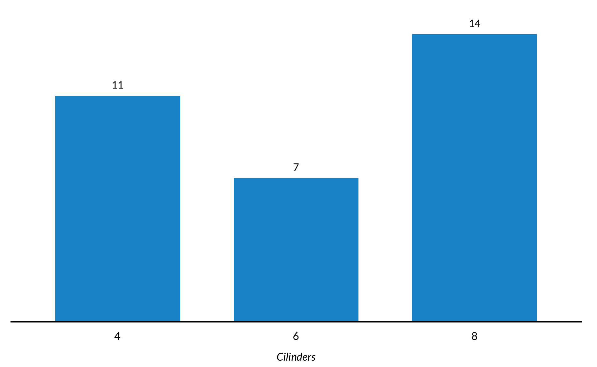
Een kleur (Geroteerd)
Dit introduceert coord_flip() en remove_axis(axis = "x", flip = TRUE). remove_axis() komt van library(urbnthemes) en creëert een aangepast thema voor geroteerde staafgrafieken.
mtcars %>%
count(cyl) %>%
ggplot(mapping = aes(x = factor(cyl), y = n)) +
geom_col() +
geom_text(mapping = aes(label = n), hjust = -1) +
scale_y_continuous(expand = expand_scale(mult = c(0, 0.1))) +
labs(x = "Cilinders",
y = NULL) +
coord_flip() +
remove_axis(axis = "x", flip = TRUE)
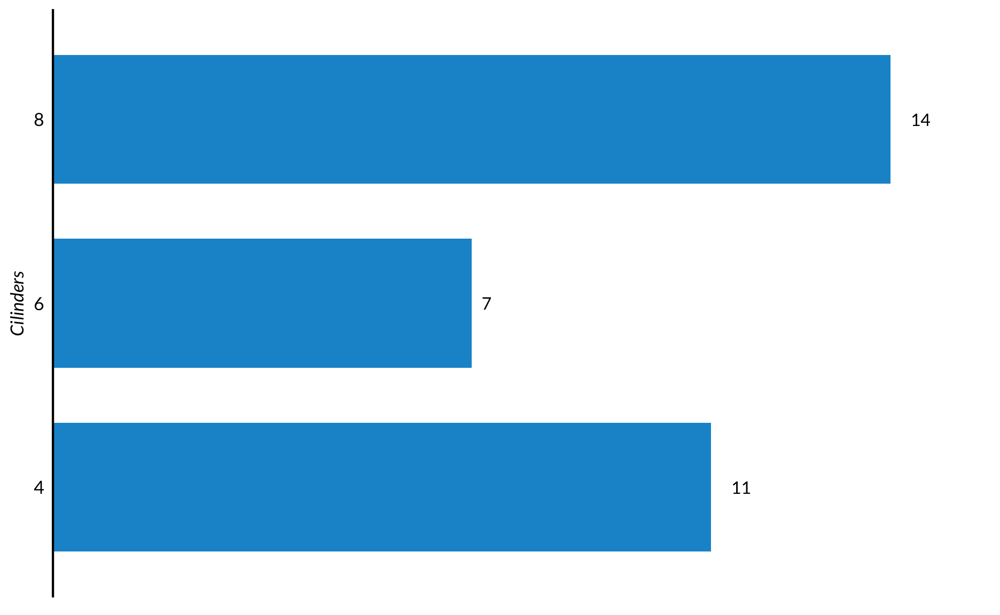
Drie kleuren
Dit is identiek aan de vorige grafiek, behalve dat kleuren en een legenda zijn toegevoegd met fill = cyl. Door x om te zetten in een factor met factor(cyl) worden 5 en 7 op de x-as overgeslagen. Het toevoegen van fill = cyl zonder factor() zou een doorlopend kleurenschema en een legenda hebben gecreëerd.
mtcars %>%
mutate(cyl = factor(cyl)) %>%
count(cyl) %>%
ggplot(mapping = aes(x = cyl, y = n, fill = cyl)) +
geom_col() +
geom_text(mapping = aes(label = n), vjust = -1) +
scale_y_continuous(expand = expand_scale(mult = c(0, 0.1))) +
labs(x = "Cylinders",
y = NULL) +
remove_ticks() +
remove_axis()
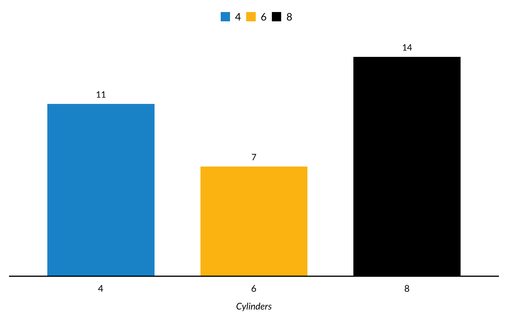
Gestapelde staafgrafiek
Een extra esthetiek kan eenvoudig worden toegevoegd aan de staafgrafiek door fill = categorical variable toe te voegen aan de mapping. Hier toont elk onderdeel een subset van een aantal auto’s met verschillende aantallen cilinders.
mtcars %>%
mutate(am = factor(am, labels = c("Automatic", "Manual")),
cyl = factor(cyl)) %>%
group_by(am) %>%
count(cyl) %>%
group_by(cyl) %>%
arrange(desc(am)) %>%
mutate(label_height = cumsum(n)) %>%
ggplot() +
geom_col(mapping = aes(x = cyl, y = n, fill = am)) +
geom_text(aes(x = cyl, y = label_height - 0.5, label = n, color = am)) +
scale_color_manual(values = c("white", "black")) +
scale_y_continuous(expand = expand_scale(mult = c(0, 0.1))) +
labs(x = "Cylinders",
y = NULL) +
remove_ticks() +
remove_axis() +
guides(color = FALSE)

Gestapelde staafgrafiek met Position = Fill
De vorige voorbeelden gebruiken geom_col(), die een y-waarde voor de staafhoogte neemt. Dit voorbeeld gebruikt geom_bar() die de waarden opsomt en een waarde voor de staafhoogte genereert. In dit voorbeeld verandert position = "fill" in geom_bar() de y-as van de telling naar de verhouding van elke staaf.
mtcars %>%
mutate(am = factor(am, labels = c("Automatic", "Manual")),
cyl = factor(cyl)) %>%
ggplot() +
geom_bar(mapping = aes(x = cyl, fill = am), position = "fill") +
scale_y_continuous(expand = expand_scale(mult = c(0, 0.1)), labels = scales::percent) +
labs(x = "Cylinders",
y = NULL) +
remove_ticks() +
guides(color = FALSE)
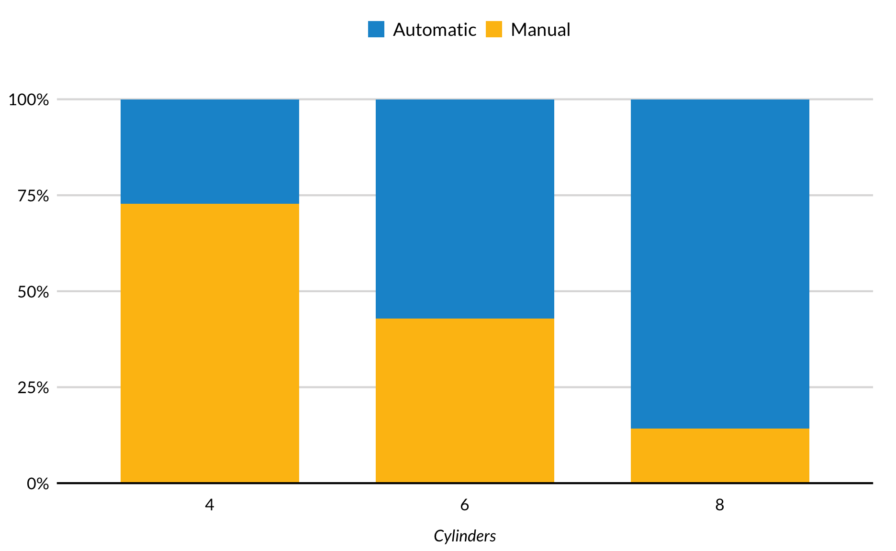
Opgedeelde staafgrafiek
Delen van de staafgrafiek in ggplot2 worden standaard opgestapeld. position = "dodge" in geom_col() breidt het staafdiagram uit zodat de subsets naast elkaar verschijnen.
mtcars %>%
mutate(am = factor(am, labels = c("Automatic", "Manual")),
cyl = factor(cyl)) %>%
group_by(am) %>%
count(cyl) %>%
ggplot(mapping = aes(cyl, y = n, fill = factor(am))) +
geom_col(position = "dodge") +
geom_text(aes(label = n), position = position_dodge(width = 0.7), vjust = -1) +
scale_y_continuous(expand = expand_scale(mult = c(0, 0.1))) +
labs(x = "Cylinders",
y = NULL) +
remove_ticks() +
remove_axis()
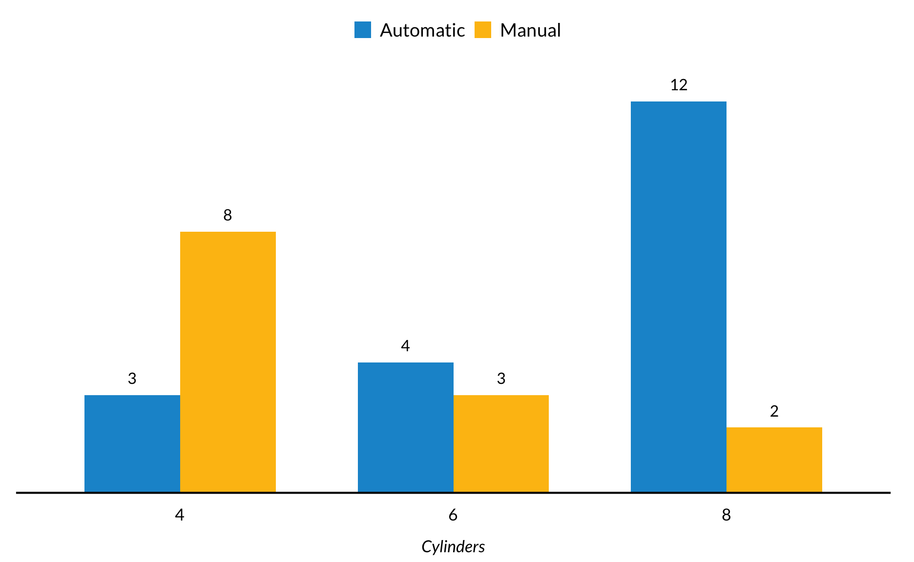
Lolly grafiek/Cleveland puntgrafiek
Lolly en Cleveland puntgrafiek zijn minimalistische alternatieven voor staafgrafieken. De sleutel tot beide grafieken is om de gegevens te ordenen op basis van de continue variabele met behulp van arrange() en dan de discrete variabele om te zetten in een factor met de geordende niveaus van de continue variabele met behulp van mutate(). Deze stap “slaat” de volgorde van de gegevens op.
Lollygrafiek
mtcars %>%
rownames_to_column("model") %>%
arrange(mpg) %>%
mutate(model = factor(model, levels = .$model)) %>%
ggplot(aes(mpg, model)) +
geom_segment(aes(x = 0, xend = mpg, y = model, yend = model)) +
geom_point() +
scale_x_continuous(expand = expand_scale(mult = c(0, 0)), limits = c(0, 40)) +
labs(x = NULL,
y = "Miles Per Gallon")

Cleveland puntgrafiek
mtcars %>%
rownames_to_column("model") %>%
arrange(mpg) %>%
mutate(model = factor(model, levels = .$model)) %>%
ggplot(aes(mpg, model)) +
geom_point() +
scale_x_continuous(expand = expand_scale(mult = c(0, 0)), limits = c(0, 40)) +
labs(x = NULL,
y = "Miles Per Gallon")
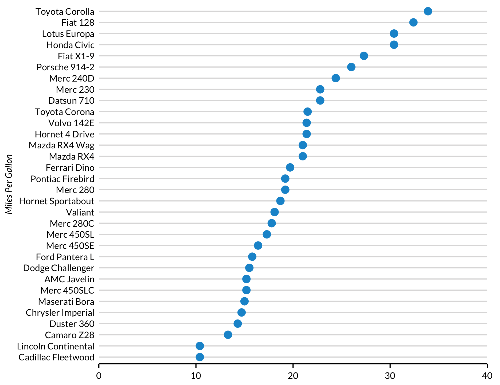
Dumbellgrafieken
Puntengrafieken
Een kleur puntengrafiek
Puntengrafieken zijn nuttig voor het tonen van relaties tussen twee of meer variabelen. Gebruik scatter_grid() van library(urbnthemes) om eenvoudig verticale rasterlijnen toe te voegen aan de puntengrafieken.
mtcars %>%
ggplot(mapping = aes(x = wt, y = mpg)) +
geom_point() +
scale_x_continuous(expand = expand_scale(mult = c(0.002, 0)),
limits = c(0, 6),
breaks = 0:6) +
scale_y_continuous(expand = expand_scale(mult = c(0, 0.002)),
limits = c(0, 40),
breaks = 0:8 * 5) +
labs(x = "Gewicht (duizenden ponden)",
y = "MPG") +
scatter_grid()
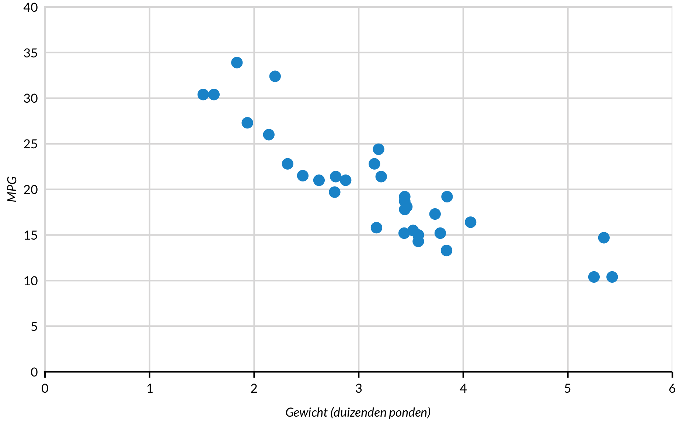
Puntengrafiek met hoge dichtheid met transparantie
Grote aantallen waarnemingen maken soms strooiplekken soms moeilijk om te interpreteren omdat punten elkaar overlappen. Het toevoegen van alpha = met een getal tussen 0 en 1 voegt transparantie toe aan punten en helderheid aan grafieken.
diamonds %>%
ggplot(mapping = aes(x = carat, y = price)) +
geom_point(alpha = 0.05) +
scale_x_continuous(expand = expand_scale(mult = c(0.002, 0)),
limits = c(0, 6),
breaks = 0:6) +
scale_y_continuous(expand = expand_scale(mult = c(0, 0.002)),
limits = c(0, 20000),
breaks = 0:4 * 5000,
labels = scales::dollar) +
labs(x = "Carat",
y = "Price") +
scatter_grid()
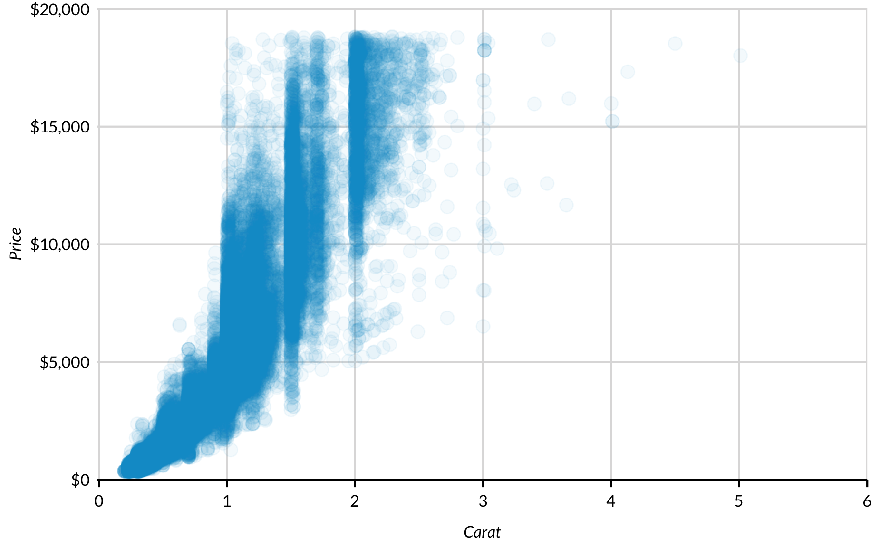
Hexus puntengrafiek
Soms is transparantie niet genoeg om duidelijkheid te brengen in een verstrooide grafiek met veel waarnemingen. Als n toeneemt in de honderdduizenden en zelfs miljoenen, kan geom_hex een van de beste manieren zijn om relaties tussen twee variabelen weer te geven.
diamonds %>%
ggplot(mapping = aes(x = carat, y = price)) +
geom_hex(mapping = aes(fill = ..count..)) +
scale_x_continuous(expand = expand_scale(mult = c(0.002, 0)),
limits = c(0, 6),
breaks = 0:6) +
scale_y_continuous(expand = expand_scale(mult = c(0, 0.002)),
limits = c(0, 20000),
breaks = 0:4 * 5000,
labels = scales::dollar) +
scale_fill_gradientn(labels = scales::comma) +
labs(x = "Carat",
y = "Price") +
scatter_grid() +
theme(legend.position = "right",
legend.direction = "vertical")
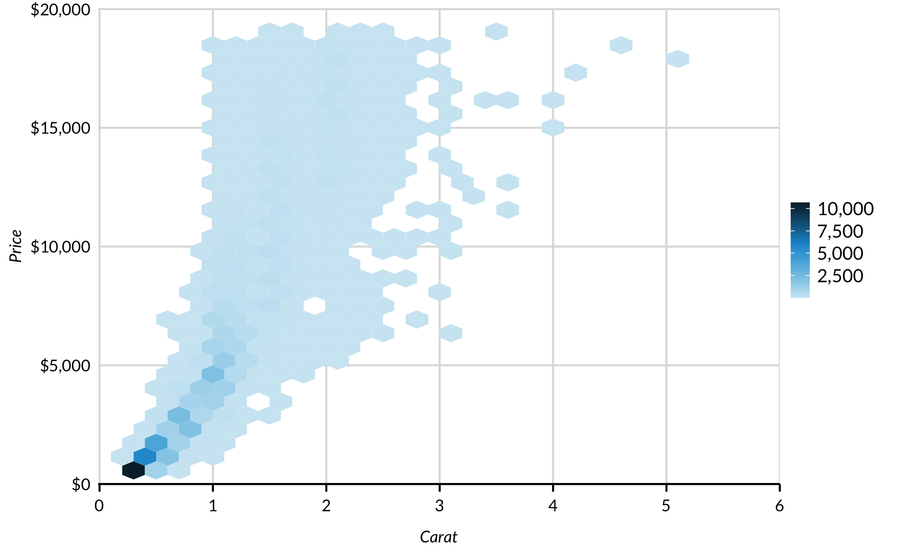
Puntengrafiek met random vervuiling
Soms hebben puntengrafieken veel overlappende punten, maar een redelijk aantal waarnemingen. Geom_jitter voegt een kleine hoeveelheid willekeurige ruis toe zodat punten minder snel overlappen. De breedte en hoogte bepalen de hoeveelheid ruis die wordt toegevoegd. Merk in het volgende voor- en naschrijven op hoeveel punten er nog zichtbaar zijn na het toevoegen van jitter.
Voor
mpg %>%
ggplot(mapping = aes(x = displ, y = cty)) +
geom_point() +
scale_x_continuous(expand = expand_scale(mult = c(0.002, 0)),
limits = c(0, 8),
breaks = 0:8) +
scale_y_continuous(expand = expand_scale(mult = c(0, 0.002)),
limits = c(0, 40),
breaks = 0:4 * 10) +
labs(x = "Uitval",
y = "MPG") +
scatter_grid()
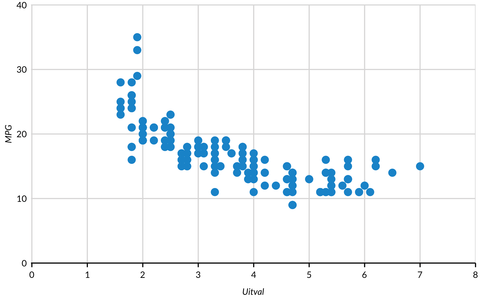
Na
set.seed(2017)
mpg %>%
ggplot(mapping = aes(x = displ, y = cty)) +
geom_jitter() +
scale_x_continuous(expand = expand_scale(mult = c(0.002, 0)),
limits = c(0, 8),
breaks = 0:8) +
scale_y_continuous(expand = expand_scale(mult = c(0, 0.002)),
limits = c(0, 40),
breaks = 0:4 * 10) +
labs(x = "Uitval",
y = "MPG") +
scatter_grid()
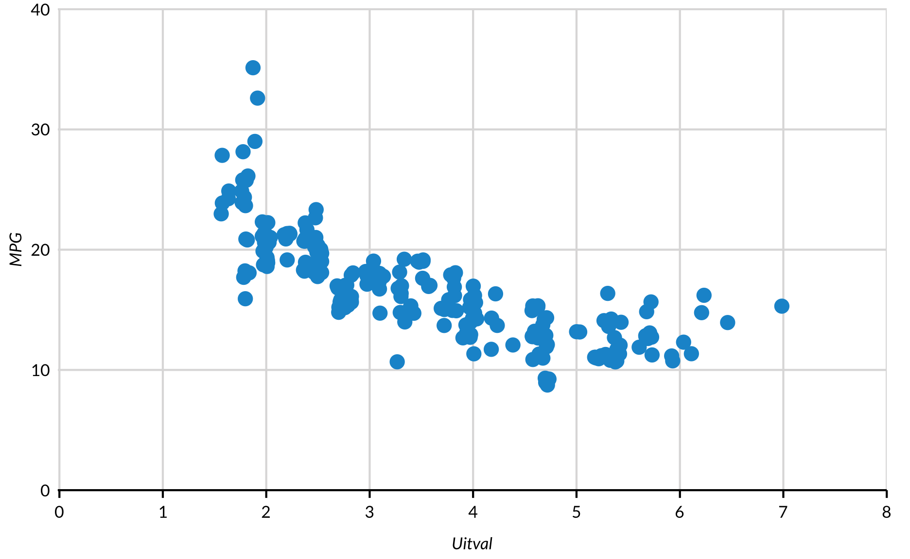
Puntengrafiek met gevarieerde puntenomvang
Gewichten en populaties kunnen in puntengrafieken met de grootte van de punten in kaart worden gebracht. Hier wordt het aantal huishoudens in elke staat in kaart gebracht op de grootte van elk punt met behulp van aes(size = hhpop). Opmerking: ggplot2::geom_point() wordt gebruikt in plaats van geom_point().
Wel eerst dit pakket laden (wel installeren als je dat nog niet hebt gedaan).
urbnmapr::statedata %>%
ggplot(mapping = aes(x = medhhincome, y = horate)) +
ggplot2::geom_point(mapping = aes(size = hhpop), alpha = 0.3) +
scale_x_continuous(expand = expand_scale(mult = c(0.002, 0)),
limits = c(30000, 80000),
breaks = 3:8 * 10000,
labels = scales::dollar) +
scale_y_continuous(expand = expand_scale(mult = c(0, 0.002)),
limits = c(0, 0.8),
breaks = 0:4 * 0.2) +
scale_radius(range = c(3, 15),
breaks = c(2500000, 7500000, 12500000),
labels = scales::comma) +
labs(x = "Huishoud inkomen",
y = "Ratio huizenbezit") +
scatter_grid() +
theme(plot.margin = margin(r = 20))
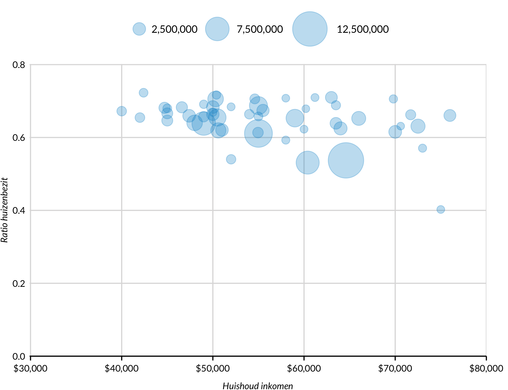
Puntengrafieken met vulling
Een derde esthetiek kan worden toegevoegd aan puntengrafieken. Hier betekent kleur het aantal cilinders in elke auto. Voordat ggplot() wordt aangeroepen, worden de cilinders aangemaakt met behulp van library(dplyr) en de functie %>%.
mtcars %>%
mutate(cyl = paste(cyl, "cylinders")) %>%
ggplot(aes(x = wt, y = mpg, color = cyl)) +
geom_point() +
scale_x_continuous(expand = expand_scale(mult = c(0.002, 0)),
limits = c(0, 6),
breaks = 0:6) +
scale_y_continuous(expand = expand_scale(mult = c(0, 0.002)),
limits = c(0, 40),
breaks = 0:8 * 5) +
labs(x = "Gewicht (duizenden ponden)",
y = "MPG") +
scatter_grid()
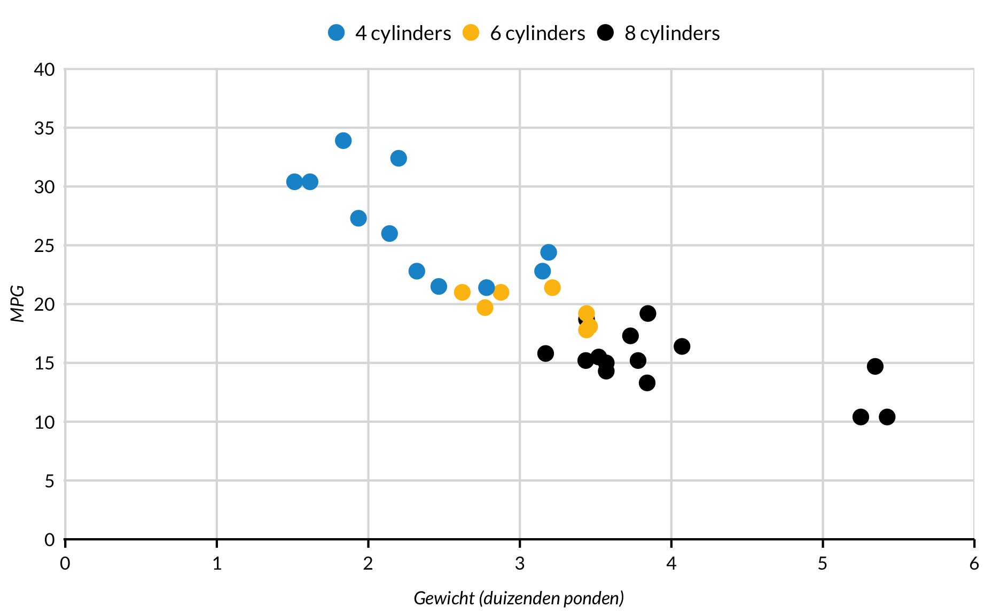
Lijngrafieken
economics %>%
ggplot(mapping = aes(x = date, y = unemploy)) +
geom_line() +
scale_x_date(expand = expand_scale(mult = c(0.002, 0)),
breaks = "10 years",
limits = c(as.Date("1961-01-01"), as.Date("2020-01-01")),
date_labels = "%Y") +
scale_y_continuous(expand = expand_scale(mult = c(0, 0.002)),
breaks = 0:4 * 4000,
limits = c(0, 16000),
labels = scales::comma) +
labs(x = "Jaar",
y = "Aantal werklozen (1,000den)")
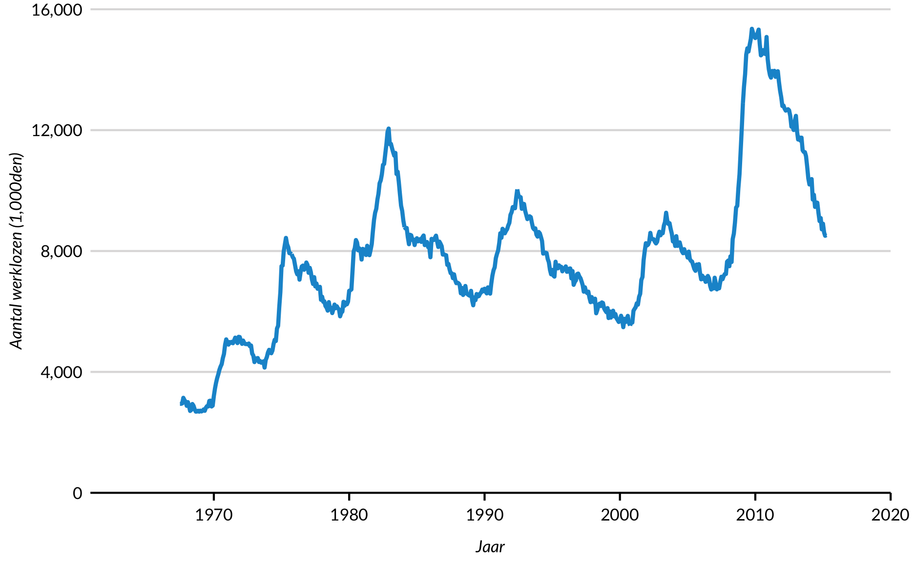
Lijngrafieken met meerdere lijnen
library(gapminder)
gapminder %>%
filter(country %in% c("Australia", "Netherlands", "New Zealand")) %>%
mutate(country = factor(country, levels = c("Netherlands", "Australia", "New Zealand"))) %>%
ggplot(aes(year, gdpPercap, color = country)) +
geom_line() +
scale_x_continuous(expand = expand_scale(mult = c(0.002, 0)),
breaks = c(1952 + 0:12 * 5),
limits = c(1952, 2007)) +
scale_y_continuous(expand = expand_scale(mult = c(0, 0.002)),
breaks = 0:8 * 5000,
labels = scales::dollar,
limits = c(0, 40000)) +
labs(x = "Jaap",
y = "BNP per hoofd van de bevolking (US dollars)")
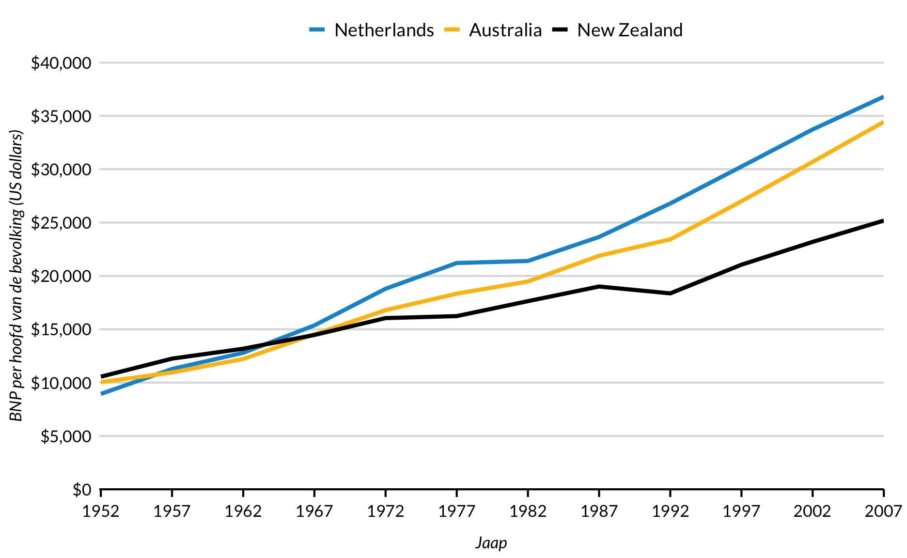
Het plotten van meer dan één variabele kan nuttig zijn om de relatie van variabelen in de tijd te zien, maar het vergt een kleine hoeveelheid databewerking.
Dit komt omdat ggplot2 gegevens in een “lang” formaat wil hebben in plaats van een “breed” formaat voor lijnplots met meerdere lijnen. gather() en spread() uit het tidyr pakket maakt het wisselen tussen “lang” en “breed” pijnloos. In wezen gaan variabele titels naar “key” en variabele waarden naar “value”. Dan verandert ggplot2, de verschillende niveaus van de sleutelvariabele (bevolking, werkloosheid) in kleuren.
as_tibble(EuStockMarkets) %>%
mutate(date = time(EuStockMarkets)) %>%
gather(key = "key", value = "value", -date) %>%
ggplot(mapping = aes(x = date, y = value, color = key)) +
geom_line() +
scale_x_continuous(expand = expand_scale(mult = c(0.002, 0)),
limits = c(1991, 1999),
breaks = c(1991, 1993, 1995, 1997, 1999)) +
scale_y_continuous(expand = expand_scale(mult = c(0, 0.002)),
breaks = 0:4 * 2500,
labels = scales::dollar,
limits = c(0, 10000)) +
labs(x = "Tijd",
y = "Waarde")
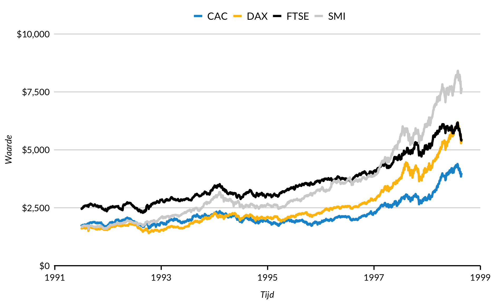
Trapgrafiek
geom_line() verbindt coördinaten met de kortst mogelijke rechte lijn. Soms zijn trapgrafieken nodig omdat de y-waarden niet veranderen tussen de coördinaten. Zo wordt bijvoorbeeld de bovengrens van de Federal Funds Rate met regelmatige tussenpozen ingesteld en blijft deze constant totdat deze wordt gewijzigd.
# downloaded from FRED on 2018-12-06
# https://fred.stlouisfed.org/series/DFEDTARU
fed_fund_rate <- read_csv(
"date, fed_funds_rate
2014-01-01,0.0025
2015-12-16,0.0050
2016-12-14,0.0075
2017-03-16,0.0100
2017-06-15,0.0125
2017-12-14,0.0150
2018-03-22,0.0175
2018-06-14,0.0200
2018-09-27,0.0225
2018-12-06,0.0225")
fed_fund_rate %>%
ggplot(mapping = aes(x = date, y = fed_funds_rate)) +
geom_step() +
scale_x_date(expand = expand_scale(mult = c(0.002, 0)),
breaks = "1 year",
limits = c(as.Date("2014-01-01"), as.Date("2019-01-01")),
date_labels = "%Y") +
scale_y_continuous(expand = expand_scale(mult = c(0, 0.002)),
breaks = c(0, 0.01, 0.02, 0.03),
limits = c(0, 0.03),
labels = scales::percent) +
labs(x = "Tijd",
y = "Bovengrens van de Federal Funds Rate")
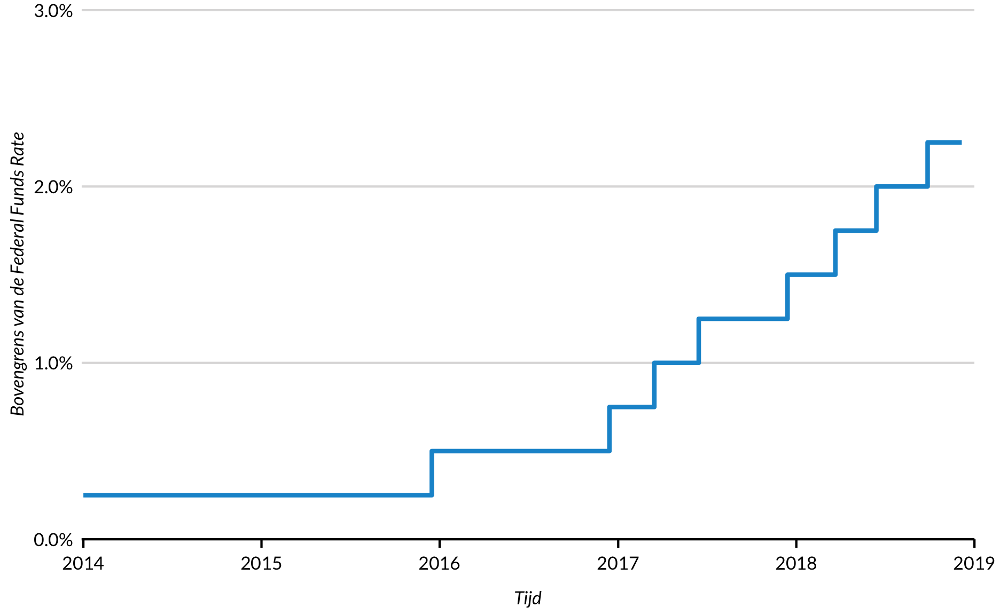
Padgrafiek
De Beveridge-curve is een macro-economisch plot dat een verband toont tussen de werkloosheidsgraad en de vacaturegraad. Bewegingen op de curve duiden op veranderingen in de bedrijfscultuur en horizontale verschuivingen van de curve duiden op structurele veranderingen op de arbeidsmarkt.
Lijnen in de Beveridge-curve bewegen niet monotoon van links naar rechts. Daarom is het noodzakelijk om geom_pad() te gebruiken.
library(ggrepel)
beveridge <- read_csv(
[1336 chars quoted with '"'])
labels <- beveridge %>%
filter(lubridate::month(quarter) == 1)
beveridge %>%
ggplot() +
geom_path(mapping = aes(x = unempoyment_rate, y = vacanacy_rate), alpha = 0.5) +
geom_point(data = labels, mapping = aes(x = unempoyment_rate, y = vacanacy_rate)) +
geom_text_repel(data = labels, mapping = aes(x = unempoyment_rate, y = vacanacy_rate, label = lubridate::year(quarter))) +
scale_x_continuous(expand = expand_scale(mult = c(0.002, 0)),
limits = c(0.04, 0.1),
labels = scales::percent) +
scale_y_continuous(expand = expand_scale(mult = c(0, 0.002)),
breaks = c(0, 0.01, 0.02, 0.03, 0.04, 0.05),
limits = c(0, 0.05),
labels = scales::percent) +
labs(x = "Seizoen gecontroleerd werkloosheidspercentage",
y = "Seizoen gecontroleerd beschikbare banenpercentage") +
scatter_grid()
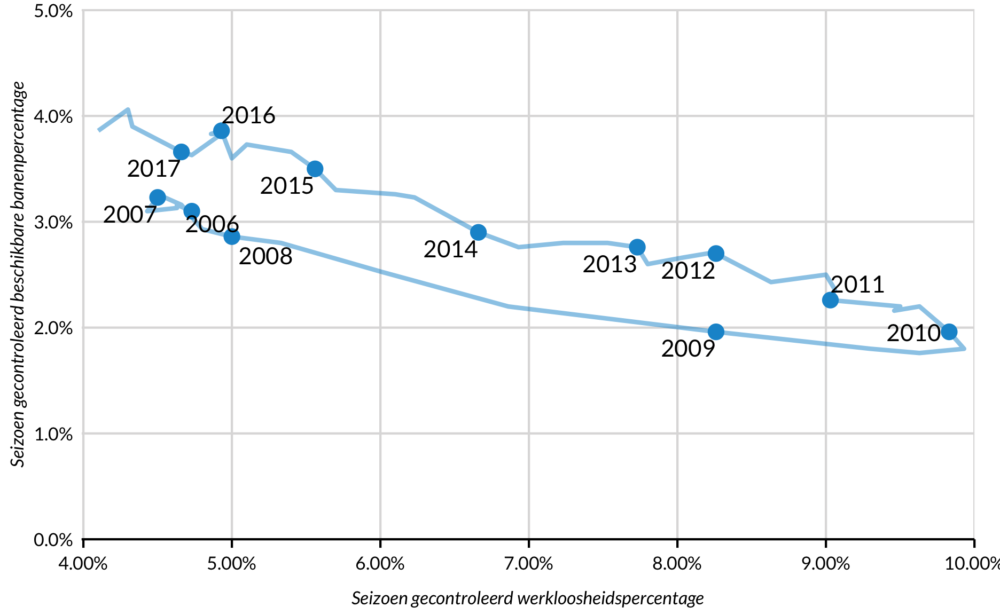
Hellingsgrafiek
# https://www.bls.gov/lau/
library(ggrepel)
unemployment <- tibble(
time = c("October 2009", "October 2009", "October 2009", "August 2017", "August 2017", "August 2017"),
rate = c(7.4, 7.1, 10.0, 3.9, 3.8, 6.4),
state = c("Maryland", "Virginia", "Washington, D.C.", "Maryland", "Virginia", "Washington, D.C.")
)
label <- tibble(label = c("October 2009", "August 2017"))
october <- filter(unemployment, time == "October 2009")
august <- filter(unemployment, time == "August 2017")
unemployment %>%
mutate(time = factor(time, levels = c("October 2009", "August 2017")),
state = factor(state, levels = c("Washington, D.C.", "Maryland", "Virginia"))) %>%
ggplot() +
geom_line(aes(time, rate, group = state, color = state), show.legend = FALSE) +
geom_point(aes(x = time, y = rate, color = state)) +
labs(subtitle = "Werkloosheidspercentage") +
theme(axis.ticks.x = element_blank(),
axis.title.x = element_blank(),
axis.ticks.y = element_blank(),
axis.title.y = element_blank(),
axis.text.y = element_blank(),
panel.grid.major.y = element_blank(),
panel.grid.minor.y = element_blank(),
panel.grid.major.x = element_blank(),
axis.line = element_blank()) +
geom_text_repel(data = october, mapping = aes(x = time, y = rate, label = as.character(rate)), nudge_x = -0.06) +
geom_text_repel(data = august, mapping = aes(x = time, y = rate, label = as.character(rate)), nudge_x = 0.06)
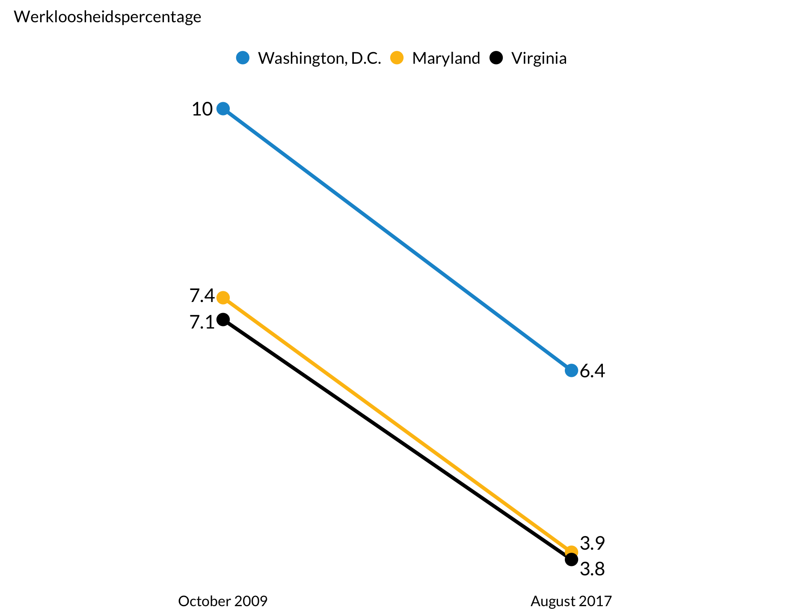
Univariaat
Er zijn een aantal manieren om de verdeling van univariate data in R te onderzoeken. Sommige methoden, zoals strookdiagrammen, laten alle datapunten zien. Andere methoden, zoals de box- en whiskerplot, tonen geselecteerde datapunten die belangrijke waarden communiceren zoals de mediaan en het 25e percentiel. Tenslotte tonen sommige methoden geen van de onderliggende data, maar berekenen ze dichtheidsschattingen. Elke methode heeft voor- en nadelen, dus het is de moeite waard om de verschillende vormen te begrijpen. Lees voor meer informatie 40 jaar boxplottem van Hadley Wickham en Lisa Stryjewski.
Stripdiagram
Stripdiagrammen, de eenvoudigste univariate plot, tonen de verdeling van de waarden langs één as. Stripdiagrammen werken het beste met variabelen die veel variatie hebben. Zo niet, dan hebben de punten de neiging om op elkaar te clusteren. Zelfs als de variabele veel variatie heeft, is het vaak belangrijk om transparantie toe te voegen aan de punten met alpha = zodat overlappende waarden zichtbaar zijn.
msleep %>%
ggplot(aes(x = sleep_total, y = factor(1))) +
geom_point(alpha = 0.2, size = 5) +
labs(y = NULL) +
scale_x_continuous(expand = expand_scale(mult = c(0.002, 0)),
limits = c(0, 25),
breaks = 0:5 * 5) +
scale_y_discrete(labels = NULL) +
labs(title = "Totale slaaptijd van verschillende zoogdieren",
x = "Totale slaaptijd (uren)",
y = NULL) +
theme(axis.ticks.y = element_blank())
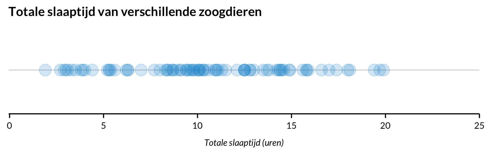
Stripdiagram met Highlighting
Omdat strookdiagrammen alle waarden weergeven, zijn ze nuttig om aan te geven waar de geselecteerde punten in de verdeling van een variabele liggen. De duidelijkste manier om dit te doen is door geom_point() tweemaal toe te voegen met filter() in het gegevensargument. Op deze manier worden de geaccentueerde waarden boven op de niet geaccentueerde waarden getoond.
ggplot() +
geom_point(data = filter(msleep, name != "Red fox"),
aes(x = sleep_total,
y = factor(1)),
alpha = 0.2,
size = 5,
color = "grey50") +
geom_point(data = filter(msleep, name == "Red fox"),
aes(x = sleep_total,
y = factor(1),
color = name),
alpha = 0.8,
size = 5) +
scale_x_continuous(expand = expand_scale(mult = c(0.002, 0)),
limits = c(0, 25),
breaks = 0:5 * 5) +
scale_y_discrete(labels = NULL) +
labs(title = "Totale slaaptijd van verschillende zoogdieren",
x = "Totale slaaptijd (uren)",
y = NULL,
legend) +
guides(color = guide_legend(title = NULL)) +
theme(axis.ticks.y = element_blank())
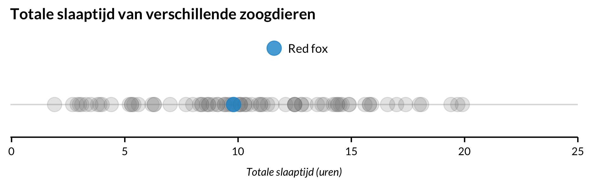
Ondergeschikte Strip Chart
Voeg een y-variabele toe om de verdelingen van de continue variabele in deelverzamelingen van een categorische variabele te zien.
library(forcats)
msleep %>%
filter(!is.na(vore)) %>%
mutate(vore = fct_recode(vore,
"Insectivore" = "insecti",
"Omnivore" = "omni",
"Herbivore" = "herbi",
"Carnivore" = "carni"
)) %>%
ggplot(aes(x = sleep_total, y = vore)) +
geom_point(alpha = 0.2, size = 5) +
scale_x_continuous(expand = expand_scale(mult = c(0.002, 0)),
limits = c(0, 25),
breaks = 0:5 * 5) +
labs(title = "Totale slaaptijd van verschillende zoogdieren volgens dieet",
x = "Totale slaaptijd (uren)",
y = NULL) +
theme(axis.ticks.y = element_blank())
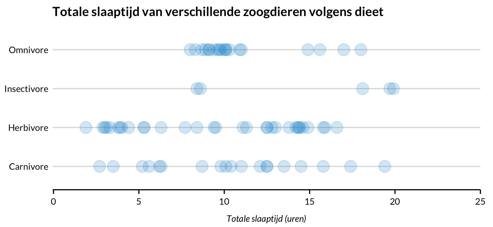
Histogrammen
Histogrammen verdelen de verdeling van een variabele in n staven van gelijke grootte en tellen en tonen vervolgens het aantal waarnemingen in elke staaf. Histogrammen zijn gevoelig voor de breedte van de staven. Zoals ?geom_histogram merkt op, “U moet altijd de waarde van [de standaard staafbreedte] overschrijven, door meerdere breedtes te onderzoeken om het beste te vinden om de verhalen in uw gegevens te illustreren”.
ggplot(data = diamonds, mapping = aes(x = depth)) +
geom_histogram(bins = 100) +
scale_x_continuous(expand = expand_scale(mult = c(0.002, 0)),
limits = c(0, 100)) +
scale_y_continuous(expand = expand_scale(mult = c(0, 0.2)), labels = scales::comma) +
labs(x = "Depth",
y = "Count")
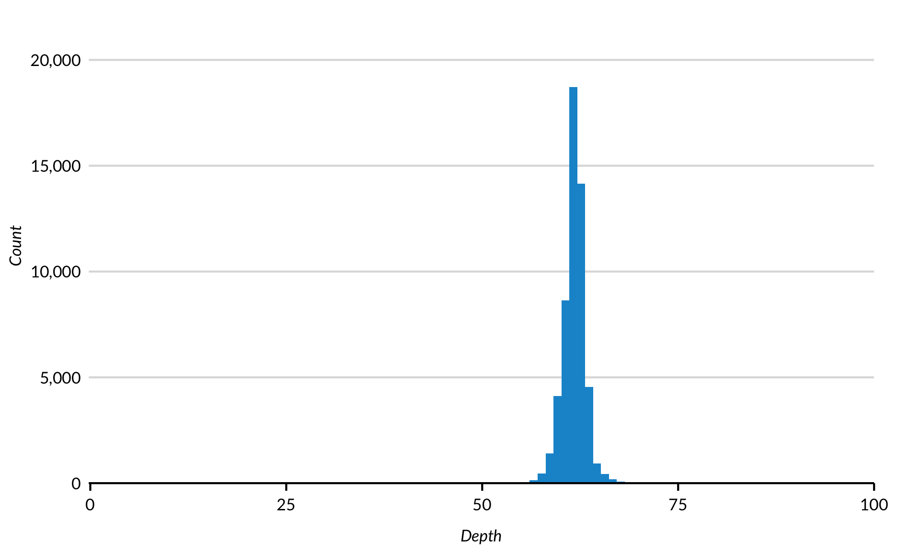
Boxplots
Boxplots zijn in de jaren zeventig uitgevonden door John Tukey. In plaats van de onderliggende gegevens te tonen of het aantal blikken van de onderliggende gegevens, richten ze zich op belangrijke waarden zoals het 25e percentiel, de mediaan en het 75e percentiel.
InsectSprays %>%
ggplot(mapping = aes(x = spray, y = count)) +
geom_boxplot() +
scale_y_continuous(expand = expand_scale(mult = c(0, 0.2))) +
labs(x = "Type of insect spray",
y = "Number of dead insects") +
remove_ticks()
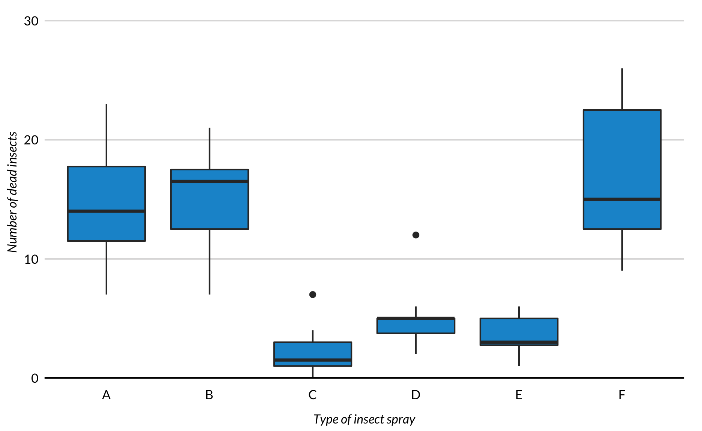
Gladde kernel verdelingsgrafieken
Doorlopende variabelen met vloeiende verdelingen worden soms beter weergegeven met afgevlakte kerneldichtheidsschattingen dan histogrammen of boxplots. geom_density() berekent en plot een kerneldichtheidsschatting. Let op de klontjes rond gehele en halve getallen in de volgende verdeling vanwege afrondingen.
diamonds %>%
ggplot(mapping = aes(carat)) +
geom_density(color = NA) +
scale_x_continuous(expand = expand_scale(mult = c(0.002, 0)),
limits = c(0, NA)) +
scale_y_continuous(expand = expand_scale(mult = c(0, 0.2))) +
labs(x = "Carat",
y = "Density")
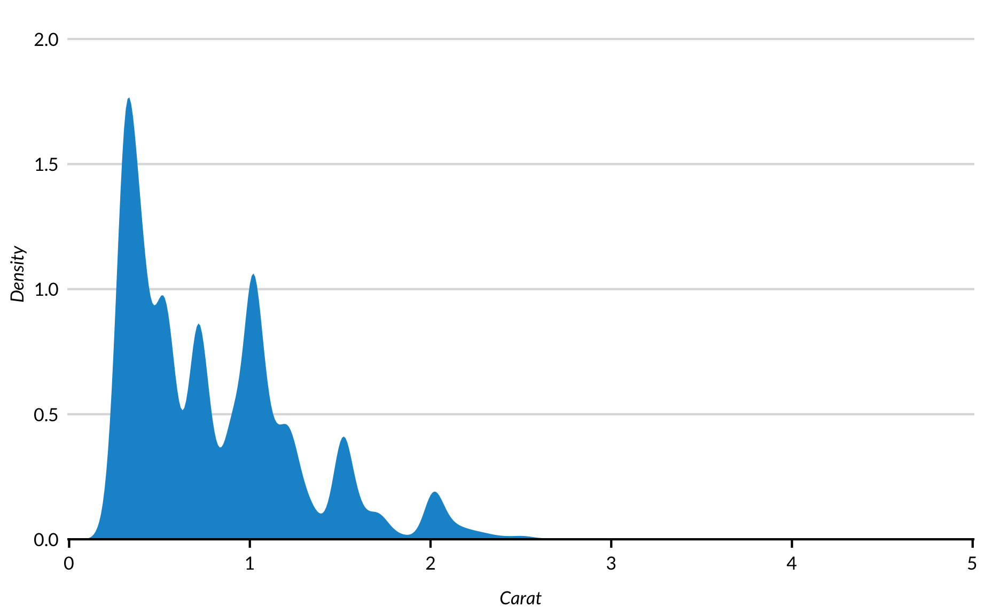
diamonds %>%
mutate(cost = ifelse(price > 5500, "More than $5,500 +", "$0 to $5,500")) %>%
ggplot(mapping = aes(carat, fill = cost)) +
geom_density(alpha = 0.25, color = NA) +
scale_x_continuous(expand = expand_scale(mult = c(0.002, 0)),
limits = c(0, NA)) +
scale_y_continuous(expand = expand_scale(mult = c(0, 0.1))) +
labs(x = "Carat",
y = "Density")
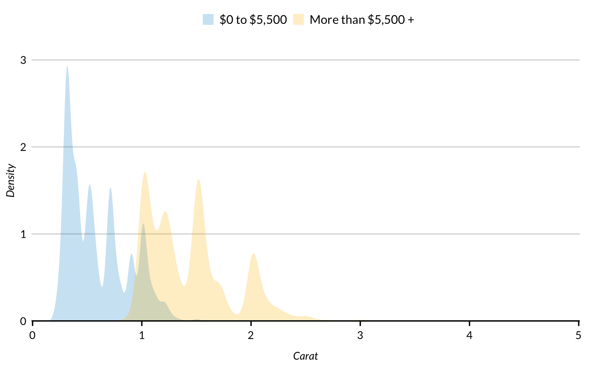
‘Ridgeline’ grafieken
Ridgeline plots zijn gedeeltelijk overlappende afgevlakte kerneldichtheid plots gefacetteerd door een categorische variabele die veel informatie verpakken in één elegante plot. Onderstaande maakt duidelijk wat we hiermee bedoelen.
library(ggridges)
ggplot(diamonds, mapping = aes(x = price, y = cut)) +
geom_density_ridges(fill = "#1696d2") +
labs(x = "Price",
y = "Cut")
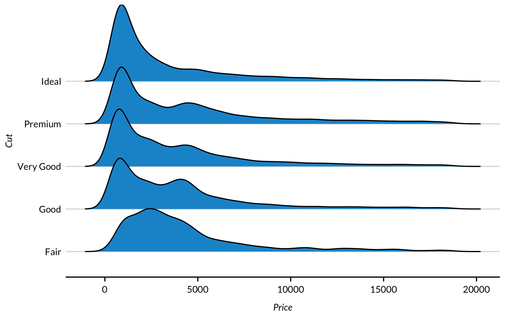
Viool grafieken
Vioolplots zijn symmetrische weergaven van gladde kerneldichtheidplots.
InsectSprays %>%
ggplot(mapping = aes(x = spray, y = count, fill = spray)) +
geom_violin(color = NA) +
scale_y_continuous(expand = expand_scale(mult = c(0, 0.2))) +
labs(x = "Type of insect spray",
y = "Number of dead insects") +
remove_ticks()
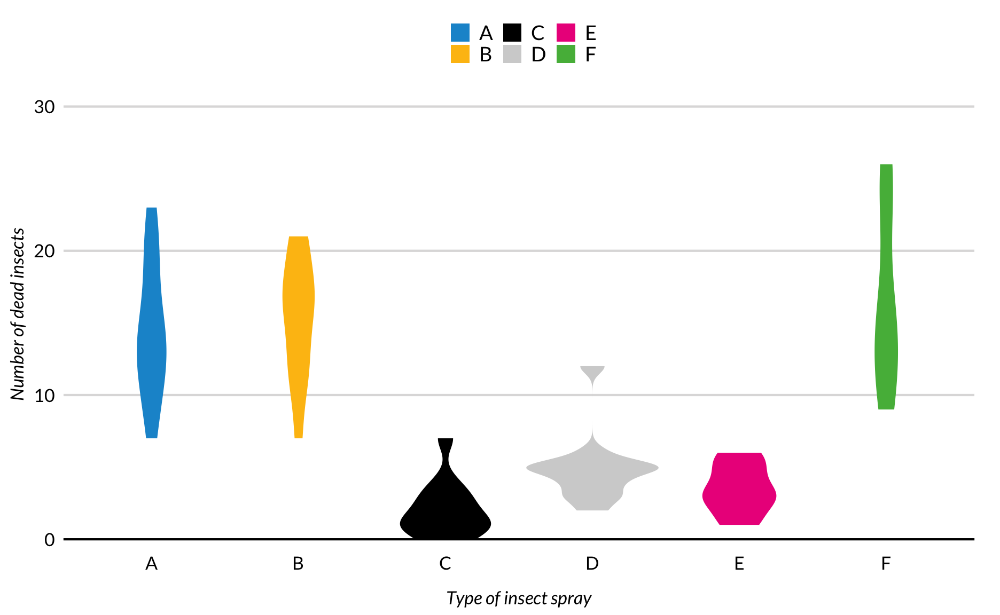
Bonenplot
Individuele uitschieters en belangrijke samenvattende waarden zijn niet zichtbaar in vioolplots of afgevlakte kerneldichtheidsplots. Bonenplots, gemaakt door Peter Kampstra in 2008, zijn vioolplots met gegevens weergegeven als kleine lijnen in een eendimensionale stripplot en grotere lijnen voor het gemiddelde.
msleep %>%
filter(!is.na(vore)) %>%
mutate(vore = fct_recode(vore,
"Insectivore" = "insecti",
"Omnivore" = "omni",
"Herbivore" = "herbi",
"Carnivore" = "carni"
)) %>%
ggplot(aes(x = vore, y = sleep_total, fill = vore)) +
stat_summary(fun.y = "mean",
colour = "black",
size = 30,
shape = 95,
geom = "point") +
geom_violin(color = NA) +
geom_jitter(width = 0,
height = 0.05,
alpha = 0.4,
shape = "-",
size = 10,
color = "grey50") +
scale_y_continuous(expand = expand_scale(mult = c(0, 0.2))) +
labs(x = NULL,
y = "Total sleep time (hours)") +
theme(legend.position = "none") +
remove_ticks()
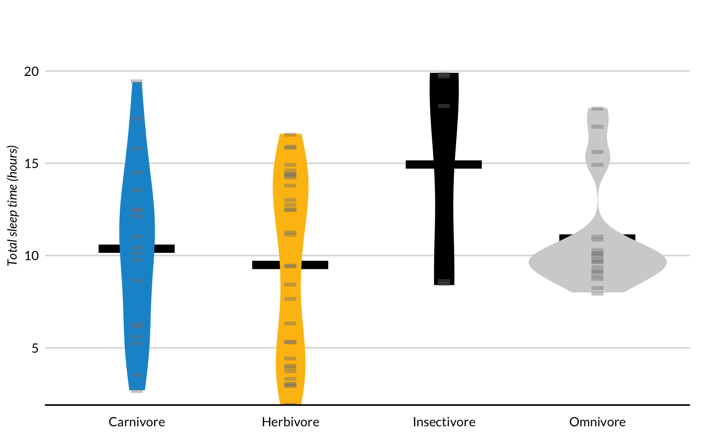
Gebiedsplot
Gestapeld gebied
txhousing %>%
filter(city %in% c("Austin","Houston","Dallas","San Antonio","Fort Worth")) %>%
group_by(city, year) %>%
summarize(sales = sum(sales)) %>%
ggplot(aes(x = year, y = sales, fill = city)) +
geom_area(position = "stack") +
scale_x_continuous(expand = expand_scale(mult = c(0, 0)),
limits = c(2000, 2015),
breaks = 2000 + 0:15) +
scale_y_continuous(expand = expand_scale(mult = c(0, 0.2)),
labels = scales::comma) +
labs(x = "Year",
y = "Home sales")

Gevuld gebied
txhousing %>%
filter(city %in% c("Austin","Houston","Dallas","San Antonio","Fort Worth")) %>%
group_by(city, year) %>%
summarize(sales = sum(sales)) %>%
ggplot(aes(x = year, y = sales, fill = city)) +
geom_area(position = "fill") +
scale_x_continuous(expand = expand_scale(mult = c(0, 0)),
limits = c(2000, 2015),
breaks = 2000 + 0:15) +
scale_y_continuous(expand = expand_scale(mult = c(0, 0.02)),
breaks = c(0, 0.25, 0.5, 0.75, 1),
labels = scales::percent) +
labs(x = "Year",
y = "Home sales")
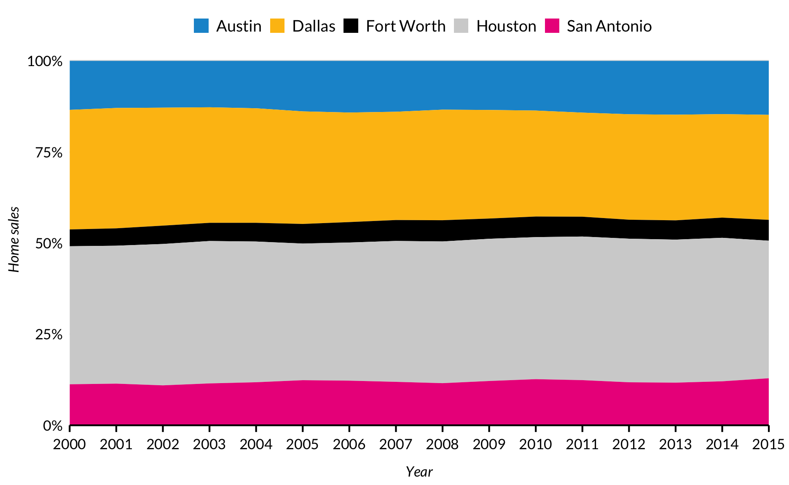
Wafelkaart / Vierkante taartkaart
Het wafelpakket {CRAN en Github} maakt vierkante taartkaarten. Het kan ook gecombineerd worden met glyphs voor meer elegantere vormen dan vierkanten. Data hiervoor komen hier vandaan: A Vision for an Equitable DC.
Wafelkaarten vereisen een beetje extra knutselen omdat ze worden genoemd vanuit library(waffle) in plaats van library(ggplot2). Het belangrijkste is dat voor wafeldiagrammen theme_urban(text = element_text(family = "Lato")) nodig is voor het lettertype Lato.
Enkele wafelkaart
library(waffle)
parts <- c(`Virginia\nClinics` = (1000 - 208 - 105), `Maryland\nClinics` = 208, `D.C.\nClinics` = 105)
waffle(parts, rows = 25, size = 1, colors = c("#1696d2", "#fdbf11", "#000000"), legend_pos = "bottom") +
labs(title = "Free Clinics in the D.C.-Maryland-Virginia Area",
subtitle = "1 Square == 1 Clinic") +
theme(text = element_text(family = "Lato"))
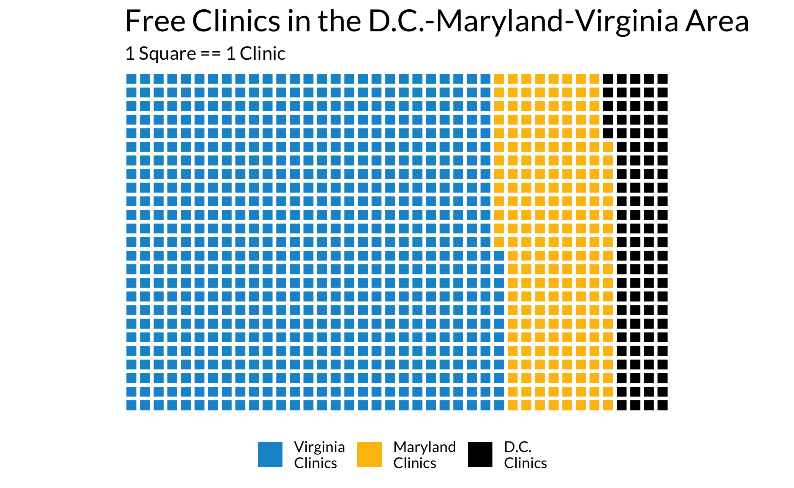
Meervoudige wafelkaarten
library(waffle) allows multiple waffle charts to be ironed together using iron(). maakt het mogelijk om meerdere wafelkaarten in elkaar te strijken met behulp van iron(). Het samen strijken van meerdere wafeldiagrammen vereist wat trial-and-error om de maten en resolutie goed te krijgen, maar de resultaten kunnen de moeite waard zijn. Vergeet niet theme(text = element_text(family = "Lato"))!
library(waffle)
white <- c(`With Degree` = 169300, `Without Degree` = 800)
black <- c(`With Degree` = 174900, `Without Degree` = 34700)
hispanic <- c(`With Degree` = 27700, `Without Degree` = 12400)
iron(
waffle(white / 83, rows = 40, size = 0.25, colors = c("#1696d2", "#fdbf11"), title = "White", keep = FALSE, pad = 10) +
theme(text = element_text(family = "Lato")),
waffle(black / 83, rows = 40, size = 0.25, colors = c("#1696d2", "#fdbf11"), title = "Black", keep = FALSE) +
theme(text = element_text(family = "Lato")),
waffle(hispanic / 83, rows = 40, size = 0.25, colors = c("#1696d2", "#fdbf11"), title = "Hispanic", keep = FALSE, pad = 59, xlab = "1 Square == 83 People") +
theme(text = element_text(family = "Lato"))
)
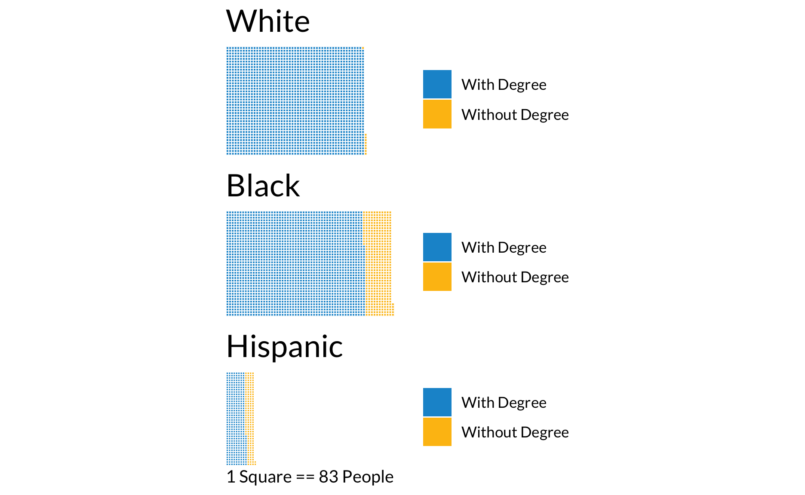
Warmtekaart
library(fivethirtyeight)
bad_drivers %>%
filter(state %in% c("Maine", "New Hampshire", "Vermont", "Massachusetts", "Connecticut", "New York")) %>%
mutate(`Number of\nDrivers` = scale(num_drivers),
`Percent\nSpeeding` = scale(perc_speeding),
`Percent\nAlcohol` = scale(perc_alcohol),
`Percent Not\nDistracted` = scale(perc_not_distracted),
`Percent No\nPrevious` = scale(perc_no_previous),
state = factor(state, levels = rev(state))
) %>%
select(-insurance_premiums, -losses, -(num_drivers:losses)) %>%
gather(`Number of\nDrivers`:`Percent No\nPrevious`, key = "variable", value = "SD's from Mean") %>%
ggplot(aes(variable, state)) +
geom_tile(aes(fill = `SD's from Mean`)) +
labs(x = NULL,
y = NULL) +
scale_fill_gradientn() +
theme(legend.position = "right",
legend.direction = "vertical",
axis.line.x = element_blank(),
panel.grid.major.y = element_blank()) +
remove_ticks()
#https://learnr.wordpress.com/2010/01/26/ggplot2-quick-heatmap-plotting/
Faceteren en kleine kaartjes
facet_wrap()
R’s faceteersysteem is een krachtige manier om kleinere kaarten te maken.
Sommige bewerkingen aan het thema kunnen nodig zijn, afhankelijk van het aantal rijen en kolommen in de plot.
diamonds %>%
ggplot(mapping = aes(x = carat, y = price)) +
geom_point(alpha = 0.05) +
facet_wrap(~cut, ncol = 5) +
scale_x_continuous(expand = expand_scale(mult = c(0, 0)),
limits = c(0, 6)) +
scale_y_continuous(expand = expand_scale(mult = c(0, 0)),
limits = c(0, 20000),
labels = scales::dollar) +
labs(x = "Karaat",
y = "Prijs") +
scatter_grid()
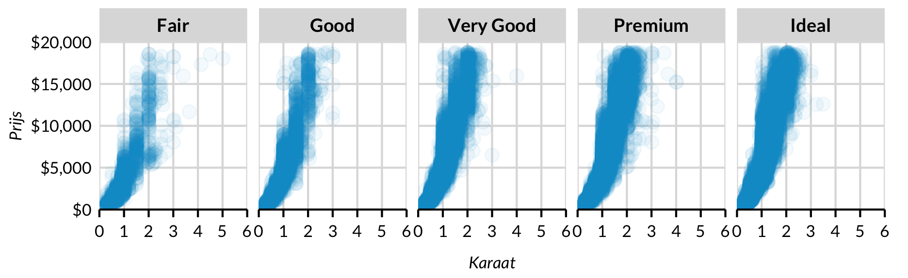
facet_grid()
diamonds %>%
filter(color %in% c("D", "E", "F", "G")) %>%
ggplot(mapping = aes(x = carat, y = price)) +
geom_point(alpha = 0.05) +
facet_grid(color ~ cut) +
scale_x_continuous(expand = expand_scale(mult = c(0, 0)),
limits = c(0, 4)) +
scale_y_continuous(expand = expand_scale(mult = c(0, 0)),
limits = c(0, 20000),
labels = scales::dollar) +
labs(x = "Carat",
y = "Price") +
theme(panel.spacing = unit(20L, "pt")) +
scatter_grid()
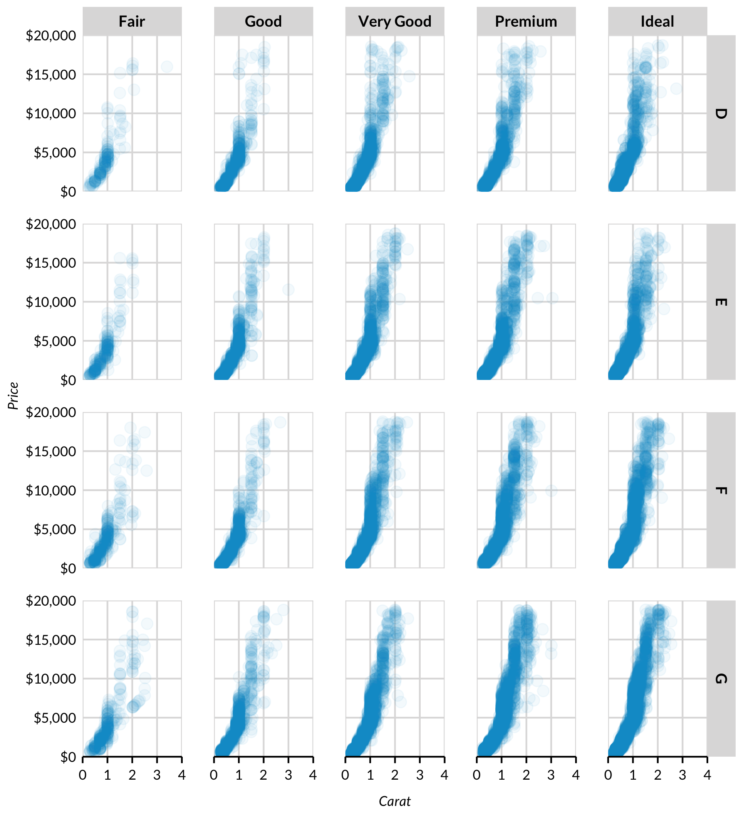
‘Smoothers’
geom_smooth() past en modelleert op gegevens met twee of meer dimensies.
Het begrijpen en manipuleren van defaults is belangrijker voor geom_smooth() dan andere ‘geoms’ omdat het een aantal aannames bevat. geom_smooth() gebruikt automatisch loess voor datasets met minder dan 1.000 waarnemingen en een algemeen model met formula = y ~ s(x, bs = "cs") voor datasets met meer dan 1.000 waarnemingen. Beide zijn standaard ingesteld op een betrouwbaarheidsinterval van 95%.
Modellen worden gekozen met method = en kunnen worden ingesteld op lm(), glm(), gam(), loess(), rlm(), en meer. Formules kunnen worden opgegeven met formule = en y ~ x syntaxis. Het plotten van de standaardfout wordt omgeschakeld met se = TRUE en se = FALSE, en het niveau wordt gespecificeerd met level =. Zoals altijd is er meer informatie te zien in RStudio met ?geom_smooth().
geom_point() voegt een scatterplot toe aan geom_smooth(). De volgorde van de functie-aanroepen is belangrijk. De functie die als tweede wordt aangeroepen wordt bovenop de functie die als eerste wordt aangeroepen gelegd.
diamonds %>%
ggplot(mapping = aes(x = carat, y = price)) +
geom_point(alpha = 0.05) +
geom_smooth(color = "#ec008b") +
scale_x_continuous(expand = expand_scale(mult = c(0.002, 0)),
limits = c(0, 5),
breaks = 0:5) +
scale_y_continuous(expand = expand_scale(mult = c(0, 0.002)),
limits = c(0, 20000),
labels = scales::dollar) +
labs(x = "Carat",
y = "Price") +
scatter_grid()
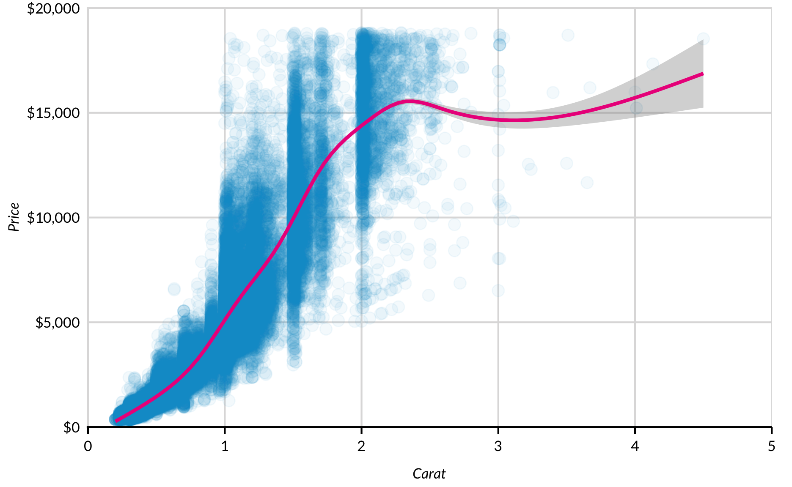
geom_smooth kan worden onderverdeeld in categorische en factorvariabelen. Dit vereist subgroepen met een behoorlijk aantal waarnemingen en een behoorlijke mate van variabiliteit over de x-as. De betrouwbaarheidsintervallen worden vaak groter aan de uiteinden, zodat speciale zorg nodig is om de grafiek zinvol en leesbaar te maken.
Dit voorbeeld gebruikt Loess met MPG = verplaatsing.
ggplot(data = mpg, mapping = aes(x = displ, y = hwy, color = factor(cyl))) +
geom_point(alpha = 0.2) +
geom_smooth() +
scale_x_continuous(expand = expand_scale(mult = c(0.002, 0)),
limits = c(0, 7),
breaks = 0:7) +
scale_y_continuous(expand = expand_scale(mult = c(0, 0.002)),
limits = c(0, 60)) +
labs(x = "Engine displacement",
y = "Highway MPG") +
scatter_grid()
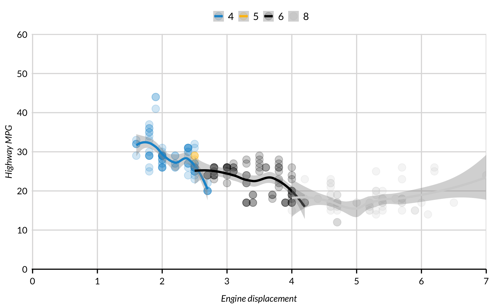
Dit voorbeeld gebruikt liniaire regressie met MPG = displacement.
ggplot(data = mpg, mapping = aes(x = displ, y = hwy, color = factor(cyl))) +
geom_point(alpha = 0.2) +
geom_smooth(method = "lm") +
scale_x_continuous(expand = expand_scale(mult = c(0.002, 0)),
limits = c(0, 7),
breaks = 0:7) +
scale_y_continuous(expand = expand_scale(mult = c(0, 0.002)),
limits = c(0, 60)) +
labs(x = "Engine displacement",
y = "Highway MPG") +
scatter_grid()
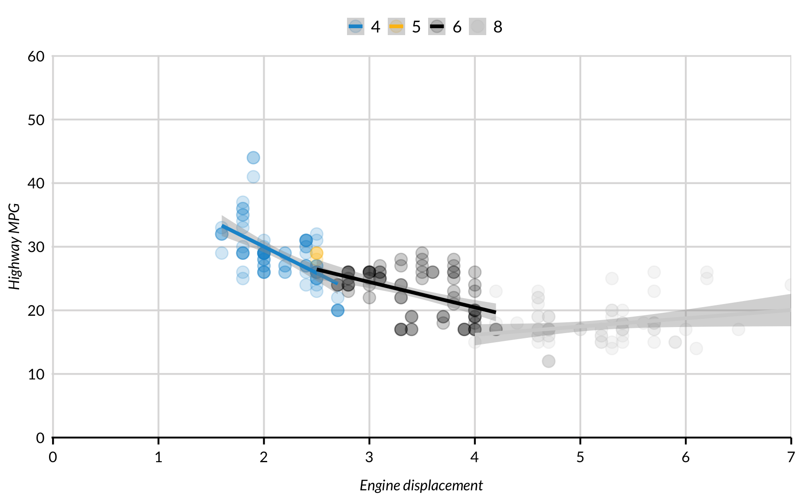
Benadrukken
library(gghighlight) maakt intuitief benadrukken van ggplot2 plots mogelijk. gghighlight wijzigt bestaande ggplot2-objecten, dus geen enkele andere code mag veranderen. Alle markering wordt afgehandeld door de functie gghighlight(), die alle soorten geomen kan verwerken.
Waarschuwing: R zal een fout maken als er te veel kleuren worden gemarkeerd vanwege het ontwerp van urbnthemes. Verlaag gewoon het aantal gemarkeerde geomen om dit probleem op te lossen.
Er zijn twee belangrijke manieren om de aandacht te vestigen.
Drempelwaarde
De eerste manier om te markeren is met een drempel. Voeg een logische test toe aan gghighlight() om te beschrijven welke lijnen gemarkeerd moeten worden. Hier worden regels met een maximale verandering in het bruto binnenlands product per hoofd van de bevolking van meer dan $35.000 gemarkeerd met gghighlight(max(pcgpd_change) > 35000, use_direct_label = FALSE).
library(gghighlight)
library(gapminder)
data <- gapminder %>%
filter(continent %in% c("Europe")) %>%
group_by(country) %>%
mutate(pcgpd_change = ifelse(year == 1952, 0, gdpPercap - lag(gdpPercap))) %>%
mutate(pcgpd_change = cumsum(pcgpd_change))
data %>%
ggplot(aes(year, pcgpd_change, group = country, color = country)) +
geom_line() +
gghighlight(max(pcgpd_change) > 35000, use_direct_label = FALSE) +
scale_x_continuous(expand = expand_scale(mult = c(0.002, 0)),
breaks = c(seq(1950, 2010, 10)),
limits = c(1950, 2010)) +
scale_y_continuous(expand = expand_scale(mult = c(0, 0.002)),
breaks = 0:8 * 5000,
labels = scales::dollar,
limits = c(0, 40000)) +
labs(x = "Year",
y = "Change in per-capita GDP (US dollars)")
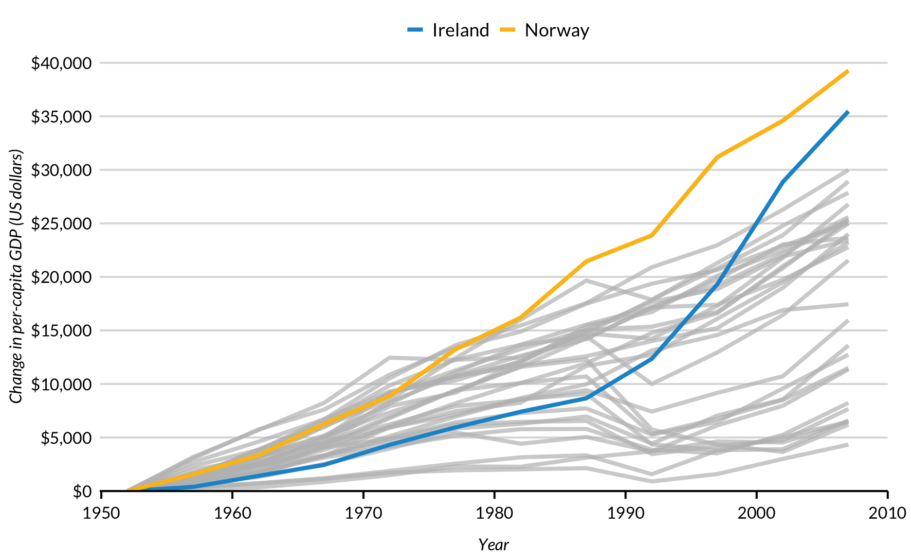
Rang
De tweede manier om te markeren is door middel van een rangorde. Hier worden de landen met de eerste hoogste waarden voor verandering in het bruto binnenlands product per hoofd van de bevolking benadrukt met gghighlight(max(pcgpd_change), max_highlight = 5, use_direct_label = FALSE).
data %>%
ggplot(aes(year, pcgpd_change, group = country, color = country)) +
geom_line() +
gghighlight(max(pcgpd_change), max_highlight = 5, use_direct_label = FALSE) +
scale_x_continuous(expand = expand_scale(mult = c(0.002, 0)),
breaks = c(seq(1950, 2010, 10)),
limits = c(1950, 2010)) +
scale_y_continuous(expand = expand_scale(mult = c(0, 0.002)),
breaks = 0:8 * 5000,
labels = scales::dollar,
limits = c(0, 40000)) +
labs(x = "Year",
y = "Change in per-capita GDP (US dollars)")
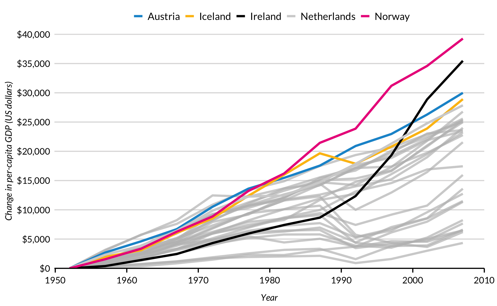
Faceteren
gghighlight() werkt goed met ggplot2’s facetsysteem.
data %>%
ggplot(aes(year, pcgpd_change, group = country)) +
geom_line() +
gghighlight(max(pcgpd_change), max_highlight = 4, use_direct_label = FALSE) +
scale_x_continuous(expand = expand_scale(mult = c(0.002, 0)),
breaks = c(seq(1950, 2010, 10)),
limits = c(1950, 2010)) +
scale_y_continuous(expand = expand_scale(mult = c(0, 0.002)),
breaks = 0:8 * 5000,
labels = scales::dollar,
limits = c(0, 40000)) +
labs(x = "Year",
y = "Change in per-capita GDP (US dollars)") +
facet_wrap(~ country) +
theme(panel.spacing = unit(20L, "pt"))
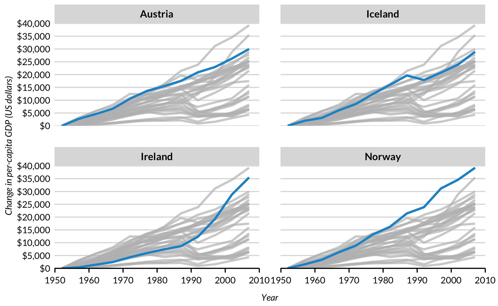
Tekst en annotatie
Verschillende functies kunnen worden gebruikt om verschillende delen van percelen te annoteren, te labelen en te markeren. geom_text() en geom_text_repel() geven beide variabelen uit dataframes weer. annotate(), die verschillende toepassingen heeft, geeft variabelen en waarden weer die zijn opgenomen in de functie-aanroep.
geom_text()
geom_text() zet tekstvariabelen in datasets om in geometrische objecten. Dit is nuttig voor het labelen van gegevens in plots. Beide functies hebben x waarden en y waarden nodig om de plaatsing op het coördinatenvlak te bepalen en een tekstvector van labels.
Dit kan gebruikt worden voor het labelen van geom_bar().
diamonds %>%
group_by(cut) %>%
summarize(price = mean(price)) %>%
ggplot(aes(cut, price)) +
geom_bar(stat = "identity") +
geom_text(aes(label = scales::dollar(price)), vjust = -1) +
scale_y_continuous(expand = expand_scale(mult = c(0, 0.2)),
labels = scales::dollar) +
labs(title = "Average Diamond Price by Diamond Cut",
x = "Cut",
y = "Price") +
remove_ticks()
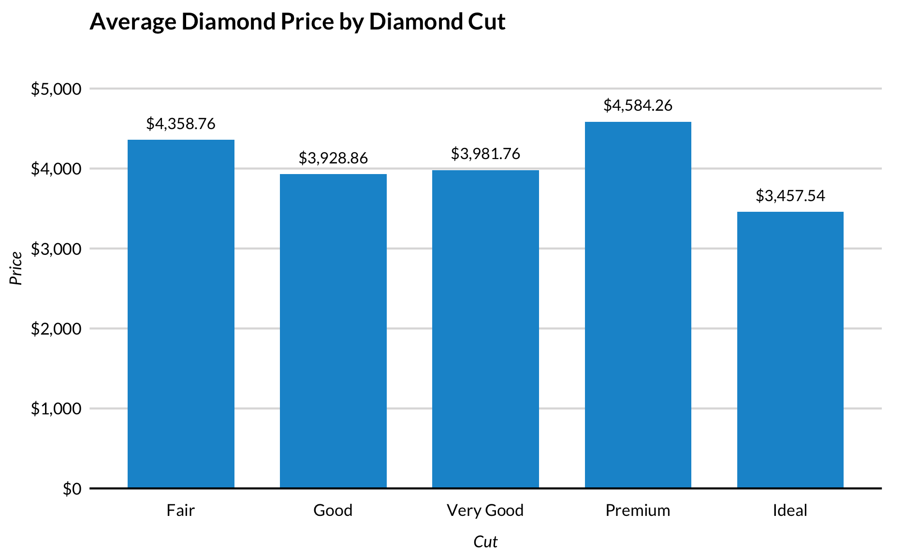
Het kan ook gebruikt worden om punten in een scatterplot te labelen.
Het is zelden nuttig om elk punt in een scatter plot te labelen. Gebruik filter() om een tweede dataset te maken die wordt onderverdeeld en deze door te geven aan de labelfunctie.
labels <- mtcars %>%
rownames_to_column("model") %>%
filter(model %in% c("Toyota Corolla", "Merc 240D", "Datsun 710"))
mtcars %>%
ggplot() +
geom_point(mapping = aes(x = wt, y = mpg)) +
geom_text(data = labels, mapping = aes(x = wt, y = mpg, label = model), nudge_x = 0.38) +
scale_x_continuous(expand = expand_scale(mult = c(0, 0.002)),
limits = c(0, 6)) +
scale_y_continuous(expand = expand_scale(mult = c(0, 0.002)),
limits = c(0, 40)) +
labs(x = "Weight (Tons)",
y = "Miles per gallon (MPG)") +
scatter_grid()
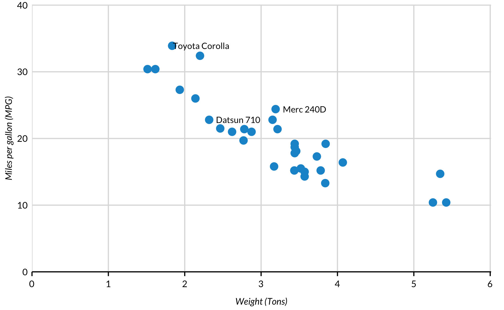
Tekst overlapt te vaak met andere tekst of geomen bij gebruik van geom_text(). library(ggrepel) is een library(ggplot2) add-on die automatisch tekst positioneert zodat deze niet overlapt met geomen of andere tekst. Om deze functionaliteit toe te voegen, installeer en laad je library(ggrepel) en gebruikt je vervolgens geom_text_repel() met dezelfde syntaxis als geom_text().
geom_text_repel()
library(ggrepel)
labels <- mtcars %>%
rownames_to_column("model") %>%
top_n(5, mpg)
mtcars %>%
ggplot(mapping = aes(x = wt, y = mpg)) +
geom_point() +
geom_text_repel(data = labels,
mapping = aes(label = model),
nudge_x = 0.38) +
scale_x_continuous(expand = expand_scale(mult = c(0, 0.002)),
limits = c(0, 6)) +
scale_y_continuous(expand = expand_scale(mult = c(0, 0.002)),
limits = c(0, 40)) +
labs(x = "Weight (Tons)",
y = "Miles per gallon (MPG)") +
scatter_grid()
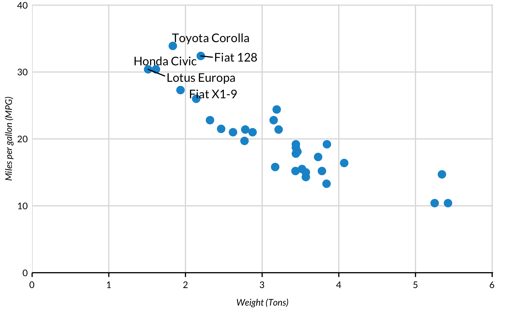
annotate()
annotate() gebruikt geen dataframes. In plaats daarvan zijn er waarden nodig voor x = en y =. Het kan tekst, rechthoeken, segmenten en puntenreeksen toevoegen.
msleep %>%
filter(bodywt <= 1000) %>%
ggplot(aes(bodywt, sleep_total)) +
geom_point() +
scale_x_continuous(expand = expand_scale(mult = c(0, 0.002)),
limits = c(-10, 1000),
labels = scales::comma) +
scale_y_continuous(expand = expand_scale(mult = c(0, 0.002)),
limits = c(0, 25)) +
annotate("text", x = 500, y = 12, label = "These data suggest that heavy \n animals sleep less than light animals") +
labs(x = "Body weight (pounds)",
y = "Sleep time (hours)") +
scatter_grid()
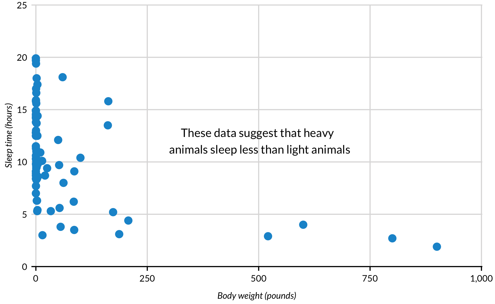
library(AmesHousing)
ames <- make_ames()
ames %>%
mutate(square_footage = Total_Bsmt_SF - Bsmt_Unf_SF + First_Flr_SF + Second_Flr_SF) %>%
mutate(Sale_Price = Sale_Price / 1000) %>%
ggplot(aes(square_footage, Sale_Price)) +
geom_point(alpha = 0.2) +
scale_x_continuous(expand = expand_scale(mult = c(0, 0.002)),
limits = c(-10, 12000),
labels = scales::comma) +
scale_y_continuous(expand = expand_scale(mult = c(0, 0.002)),
limits = c(0, 800),
labels = scales::dollar) +
annotate("rect", xmin = 6800, xmax = 11500, ymin = 145, ymax = 210, alpha = 0.1) +
annotate("text", x = 8750, y = 230, label = "Unfinished homes") +
labs(x = "Square footage",
y = "Sale price (thousands)") +
scatter_grid()
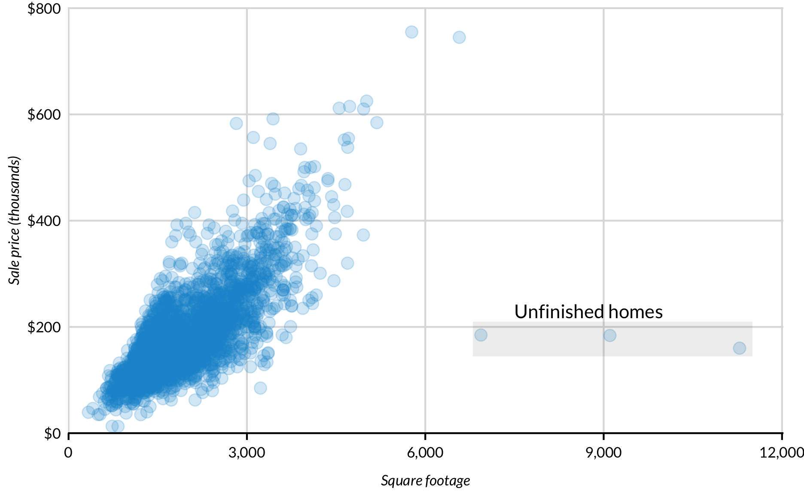
Gelaagde geoms
Geomen kunnen worden gelaagd in ggplot2. Dit is nuttig voor het ontwerp en de analyse.
Het is vaak nuttig om punten toe te voegen aan lijngrafieken met een klein aantal waarden over de x-as. Dit voorbeeld uit R voor Data Science laat zien hoe het veranderen van de lijn naar grijs aantrekkelijk kan zijn.
Design
Voor
table1 %>%
ggplot(aes(x = year, y = cases)) +
geom_line(aes(color = country)) +
geom_point(aes(color = country)) +
scale_y_continuous(expand = expand_scale(mult = c(0, 0.2)),
labels = scales::comma) +
scale_x_continuous(breaks = c(1999, 2000)) +
labs(title = "Changes in Tuberculosis Cases in Three Countries")
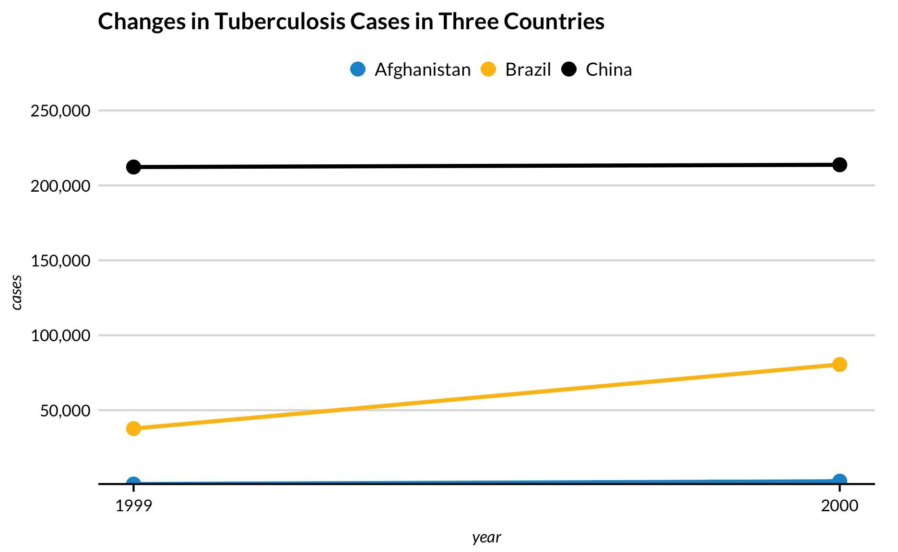
Na
table1 %>%
ggplot(aes(year, cases)) +
geom_line(aes(group = country), color = "grey50") +
geom_point(aes(color = country)) +
scale_y_continuous(expand = expand_scale(mult = c(0, 0.2)),
labels = scales::comma) +
scale_x_continuous(breaks = c(1999, 2000)) +
labs(title = "Changes in Tuberculosis Cases in Three Countries")
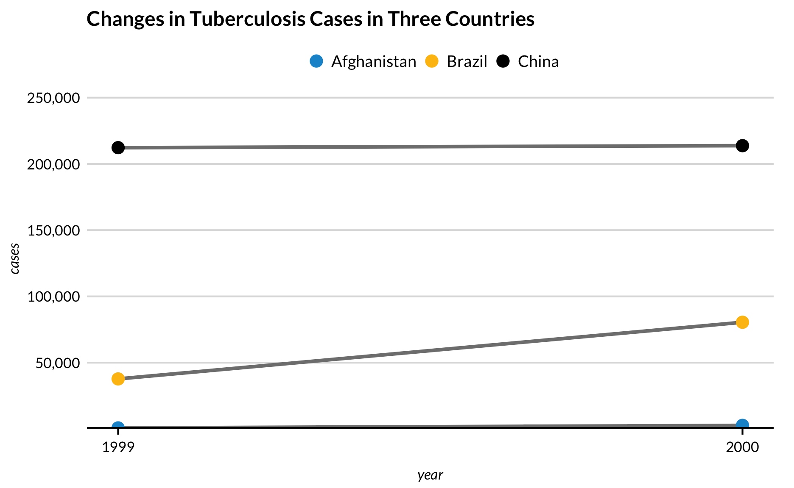
Gelaagde geomen zijn ook nuttig voor het toevoegen van trendlijnen en centroïden aan scatterplots.
# Simpele lijn
# Regressie model
# Centroiden
Centroiden
mpg_summary <- mpg %>%
group_by(cyl) %>%
summarize(displ = mean(displ), cty = mean(cty))
mpg %>%
ggplot() +
geom_point(aes(x = displ, y = cty, color = factor(cyl)), alpha = 0.5) +
geom_point(data = mpg_summary, aes(x = displ, y = cty), size = 5, color = "#ec008b") +
geom_text(data = mpg_summary, aes(x = displ, y = cty, label = cyl)) +
scale_x_continuous(expand = expand_scale(mult = c(0, 0.002)),
limits = c(0, 8)) +
scale_y_continuous(expand = expand_scale(mult = c(0, 0)),
limits = c(0, 40)) +
labs(x = "Displacement",
y = "City MPG") +
scatter_grid()
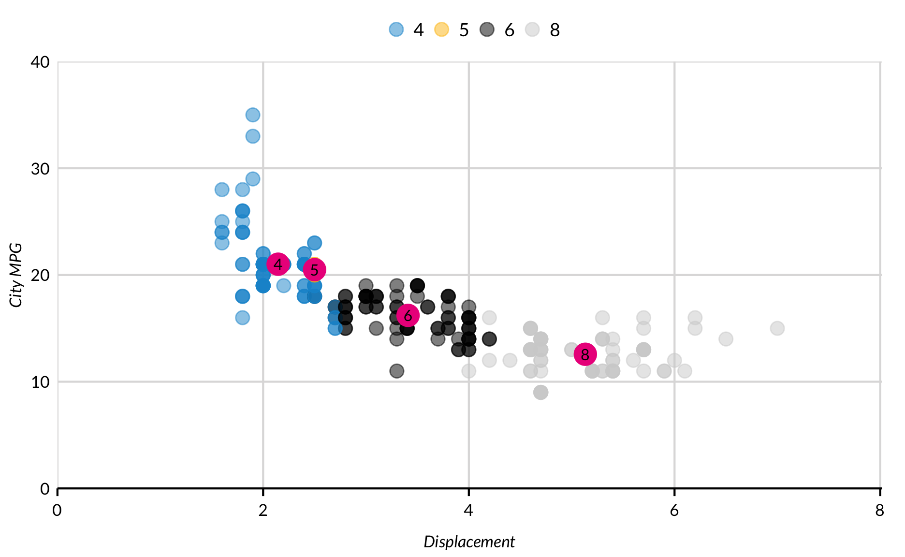
Grafieken opslaan
ggsave() exporteert ggplot2 percelen. De functie kan op twee manieren worden gebruikt. Als plot = niet is gespecificeerd in de functie-aanroep, dan slaat ggsave() automatisch de plot op die het laatst werd weergegeven in het Viewer-venster. Ten tweede, als plot = is gespecificeerd, dan slaat ggsave() het gespecificeerde plot op. ggsave() raadt het type grafische soort dat gebruikt moet worden bij het exporteren (.png, .pdf, .svg, etc.) van de bestandsextensie in de bestandsnaam.
mtcars %>%
ggplot(aes(x = wt, y = mpg)) +
geom_point()
ggsave(filename = "cars.png")
plot2 <- mtcars %>%
ggplot(aes(x = wt, y = mpg)) +
geom_point()
ggsave(filename = "cars.png", plot = plot2)Geëxporteerde plots zien er zelden identiek uit als de plots die in het Viewervenster in RStudio verschijnen omdat de totale grootte en de beeldverhouding van de Viewer vaak anders is dan de standaardinstellingen voor ggsave(). Specifieke afmetingen, beeldverhoudingen en resoluties kunnen worden gecontroleerd met argumenten in ggsave(). RStudio heeft een nuttig cheatsheet genaamd “How Big is Your Graph?” dat zou moeten helpen bij het kiezen van de beste grootte, beeldverhouding en resolutie.
Lettertypen zijn niet standaard in PDF’s opgenomen. Om lettertypes in te sluiten in PDF’s, neem device = cairo_pdf op in ggsave().
plot <- mtcars %>%
ggplot(aes(x = wt, y = mpg)) +
geom_point()
ggsave(filename = "cars.pdf", plot = plot2, width = 6.5, height = 4, device = cairo_pdf)Bibliography and Session Information
Note: Examples present in this document by Aaron Williams were created during personal time.
Bob Rudis and Dave Gandy (2017). waffle: Create Waffle Chart Visualizations in R. R package version 0.7.0. https://CRAN.R-project.org/package=waffle
Chester Ismay and Jennifer Chunn (2017). fivethirtyeight: Data and Code Behind the Stories and Interactives at ‘FiveThirtyEight’. R package version 0.3.0. https://CRAN.R-project.org/package=fivethirtyeight
Hadley Wickham. ggplot2: Elegant Graphics for Data Analysis. Springer-Verlag New York, 2009.
Hadley Wickham (2017). tidyverse: Easily Install and Load the ‘Tidyverse’. R package version 1.2.1. https://CRAN.R-project.org/package=tidyverse
Hadley Wickham (2017). forcats: Tools for Working with Categorical Variables (Factors). R package version 0.2.0. https://CRAN.R-project.org/package=forcats
Jennifer Bryan (2017). gapminder: Data from Gapminder. R package version 0.3.0. https://CRAN.R-project.org/package=gapminder
Kamil Slowikowski (2017). ggrepel: Repulsive Text and Label Geoms for ‘ggplot2’. R package version 0.7.0. https://CRAN.R-project.org/package=ggrepel
Max Kuhn (2017). AmesHousing: The Ames Iowa Housing Data. R package version 0.0.3. https://CRAN.R-project.org/package=AmesHousing
Peter Kampstra (2008). Beanplot: A Boxplot Alternative for Visual Comparison of Distributions, Journal of Statistical Software, 2008. https://www.jstatsoft.org/article/view/v028c01
R Core Team (2017). R: A language and environment for statistical computing. R Foundation for Statistical Computing, Vienna, Austria. URL https://www.R-project.org/.
Winston Chang, (2014). extrafont: Tools for using fonts. R package version 0.17. https://CRAN.R-project.org/package=extrafont
Yihui Xie (2018). knitr: A General-Purpose Package for Dynamic Report Generation in R. R package version 1.19.
R version 4.0.3 (2020-10-10)
Platform: x86_64-apple-darwin17.0 (64-bit)
Running under: macOS High Sierra 10.13.6
Matrix products: default
BLAS: /Library/Frameworks/R.framework/Versions/4.0/Resources/lib/libRblas.dylib
LAPACK: /Library/Frameworks/R.framework/Versions/4.0/Resources/lib/libRlapack.dylib
locale:
[1] en_US.UTF-8/en_US.UTF-8/en_US.UTF-8/C/en_US.UTF-8/en_US.UTF-8
attached base packages:
[1] stats graphics grDevices utils datasets methods
[7] base
other attached packages:
[1] AmesHousing_0.0.4 gghighlight_0.3.0 fivethirtyeight_0.6.1
[4] waffle_0.7.0 ggridges_0.5.2 gapminder_0.3.0
[7] urbnmapr_0.0.0.9002 extrafont_0.17 ggrepel_0.8.2
[10] urbnthemes_0.0.1 forcats_0.5.0 stringr_1.4.0
[13] dplyr_1.0.2 purrr_0.3.4 readr_1.4.0
[16] tidyr_1.1.2 tibble_3.0.4 ggplot2_3.3.2
[19] tidyverse_1.3.0 knitr_1.30
loaded via a namespace (and not attached):
[1] httr_1.4.2 jsonlite_1.7.1 splines_4.0.3
[4] modelr_0.1.8 assertthat_0.2.1 blob_1.2.1
[7] cellranger_1.1.0 yaml_2.2.1 Rttf2pt1_1.3.8
[10] pillar_1.4.6 backports_1.1.10 lattice_0.20-41
[13] glue_1.4.2 extrafontdb_1.0 digest_0.6.27
[16] RColorBrewer_1.1-2 rvest_0.3.6 colorspace_1.4-1
[19] Matrix_1.2-18 htmltools_0.5.0 plyr_1.8.6
[22] pkgconfig_2.0.3 broom_0.7.2 haven_2.3.1
[25] scales_1.1.1 distill_1.0 downlit_0.2.0
[28] mgcv_1.8-33 generics_0.0.2 farver_2.0.3
[31] ellipsis_0.3.1 withr_2.3.0 hexbin_1.28.1
[34] cli_2.1.0 magrittr_1.5 crayon_1.3.4
[37] readxl_1.3.1 evaluate_0.14 fs_1.5.0
[40] fansi_0.4.1 nlme_3.1-149 xml2_1.3.2
[43] tools_4.0.3 hms_0.5.3 lifecycle_0.2.0
[46] munsell_0.5.0 reprex_0.3.0 compiler_4.0.3
[49] rlang_0.4.8 grid_4.0.3 rstudioapi_0.11
[52] labeling_0.4.2 rmarkdown_2.5 gtable_0.3.0
[55] DBI_1.1.0 R6_2.4.1 gridExtra_2.3
[58] lubridate_1.7.9 stringi_1.5.3 Rcpp_1.0.5
[61] vctrs_0.3.4 dbplyr_1.4.4 tidyselect_1.1.0
[64] xfun_0.18